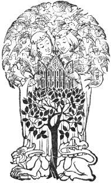
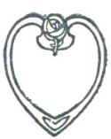

Title: The gift of friendship
Compiler: Alfred H. Hyatt
Contributor: Joseph Addison
Anthusa
Aristotle
Francis Bacon
George Berkeley
Thomas Carlyle
Ralph Waldo Emerson
Oliver Goldsmith
Samuel Johnson
Henry Mackenzie
Michel de Montaigne
Sir Richard Steele
Henry David Thoreau
Illustrator: H. C. Preston MacGoun
Release date: September 2, 2018 [eBook #57837]
Most recently updated: January 24, 2021
Language: English
Other information and formats: www.gutenberg.org/ebooks/57837
Credits: Produced by Turgut Dincer, Chuck Greif and the Online
Distributed Proofreading Team at http://www.pgdp.net (This
book was produced from images made available by the
HathiTrust Digital Library.)
THE GIFT OF FRIENDSHIP
THE FOULIS BOOKS

{iv}
Printed October 1910
Edinburgh: T. and A. Constable, Printers to His Majesty
{v}
| I | R. W. Emerson | |
| PAGE | ||
| Friendship | 1 | |
| II | H. D. Thoreau | |
| Friends and Friendship | 45 | |
| III | Thomas Carlyle | |
| The Sentiment of Friendship | 79 | |
| IV | Henry Mackenzie | |
| On the Acquisition of Friends | 89 | |
| V | Oliver Goldsmith | |
| On Friendship | 99 | |
| VI | Dr. Johnson | |
| The Pleasures of Friendship | 109 | |
| VII | Dr. Johnson | |
| The True Art of Friendship | 119 | |
| VIII | George Berkeley | |
| The Virtue of Friendship | 137 | |
| {vi}IX | Sir Richard Steele | |
| On the Choice of Friends | 151 | |
| X | Joseph Addison | |
| The Qualifications of Friendship | 161 | |
| XI | Francis Bacon | |
| Of Friendship | 173 | |
| XII | Montaigne | |
| Of Friendship | 193 | |
| XIII | Anthusa to St. John | |
| Ideal Friendship | 231 | |
| XIV | Aristotle | |
| The Blessings of Friendship | 247 | |
From Water-Colour Drawings by
H. C. Preston Macgoun, R.S.W.
SELECTED AND
EDITED BY
ALFRED H. HYATT
TO MY FRIEND
FRED. G. BOWLES
{1}
WE have a great deal more kindness than is ever spoken. Maugre all the selfishness that chills like east winds the world, the whole human family is bathed with an element of love like a fine ether. How many persons we meet in houses whom we scarcely speak to, whom yet we honour, and who honour us; how many we see in the street, or sit with in church, whom, though silently, we warmly rejoice to be with! Read the language of these wandering eye-beams. The heart knoweth.
The effect of the indulgence of this human affection is a certain cordial exhilaration. In poetry, and in common{4}
speech, the emotions of benevolence and complacency which are felt towards others are likened to the material effects of fire; so swift or much more swift, more active more cheering are these fine inward irradiations. From the highest degree of passionate love, to the lowest degree of goodwill, they make the sweetness of life.
Our intellectual and active powers increase with our affection. The scholar sits down to write, and all his years of meditation do not furnish him with one good thought or happy expression; but it is necessary to write a letter to a friend—and, forthwith, troops of gentle thoughts invest themselves on every hand with chosen words. See, in any house where virtue and self-respect abide, the palpitation which the approach of a stranger causes. A commended stranger is expect{5}ed
and announced, and an uneasiness betwixt pleasure and pain invades all the hearts of a household. His arrival almost brings fear to the good hearts that would welcome him. The house is dusted, all things fly into their places, the old coat is exchanged for the new, and they must get up a dinner if they can. Of a commended stranger, only the good report is told by others, only the good and new is heard by us. He stands to us for humanity. He is what we wish. Having imagined and invested him, we ask how we should stand related in conversation and action with such a man, and are uneasy with fear. The same idea exalts conversation with him. We talk better than we are wont. We have the nimblest fancy, a richer memory, and our dumb devil has taken leave for the time. For long hours we{6}
can continue a series of sincere, graceful, rich communications, drawn from the oldest, secretest experience, so that they who sit by, of our own kinsfolk and acquaintance, shall feel a lively surprise at our unusual powers. But as soon as the stranger begins to intrude his partialities, his definitions, his defects, into the conversation, it is all over. He has heard the first, the last, and best he will ever hear from us. He is no stranger now. Vulgarity, ignorance, misapprehension are old acquaintances. Now, when he comes, he may get the order, the dress, and the dinner—but the throbbing of the heart, and the communications of the soul, no more.
What is so pleasant as these jets of affection which make a young world for me again? What so delicious as a just and firm encounter of two, in a thought,{7}
in a feeling? How beautiful, on their approach to this beating heart, the steps and forms of the gifted and the true! The moment we indulge our affections, the earth is metamorphosed; there is no winter, and no night; all tragedies, all ennuis, vanish—all duties even; nothing fills the proceeding eternity but the forms all radiant of beloved persons. Let the soul be assured that somewhere in the universe it should rejoin its friend, and it would be content and cheerful alone for a thousand years.
I awoke this morning with devout thanksgiving for my friends, the old and the new. Shall I not call God the Beautiful, who daily showeth himself so to me in his gifts? I chide society, I embrace solitude, and yet I am not so ungrateful as not to see the wise, the lovely, and{8}
the noble-minded, as from time to time they pass my gate. Who hears me, who understands me, becomes mine—a possession for all time. Nor is nature so poor but she gives me this joy several times, and thus we weave social threads of our own, a new web of relations; and, as many thoughts in succession substantiate themselves, we shall by and by stand in a new world of our own creation, and no longer strangers and pilgrims in a traditionary globe. My friends have come to me unsought. The great God gave them to me. By oldest right, by the divine affinity of virtue with itself, I find them, or rather not I, but the Deity in me and in them derides and cancels the thick walls of individual character, relation, age, sex, circumstance, at which he usually connives, and now makes many one. High{9}
thanks I owe you, excellent lovers, who carry out the world for me to new and noble depths, and enlarge the meaning of all my thoughts. These are new poetry of the first Bard—poetry without stop—hymn, ode, and epic, poetry still flowing, Apollo and the Muses chanting still. Will these, too, separate themselves from me again, or some of them? I know not, but I fear it not; for my relation to them is so pure that we hold by simple affinity, and the Genius of my life being thus social, the same affinity will exert its energy on whomsoever is as noble as these men and women, wherever I may be.
I confess to an extreme tenderness of nature on this point. It is almost dangerous to me to ‘crush the sweet poison of misused wine’ of the affections. A new person is to me a great event, and hinders{10}
me from sleep. I have often had fine fancies about persons which have given me delicious hours; but the joy ends in the day; it yields no fruit. Thought is not born of it; my action is very little modified. I must feel pride in my friend’s accomplishments as if they were mine—and a property in his virtues. I feel as warmly when he is praised as the lover when he hears applause of his engaged maiden. We over-estimate the conscience of our friend. His goodness seems better than our goodness, his nature finer, his temptations less. Everything that is his—his name, his form, his dress, books, and instruments—fancy enhances. Our own thought sounds new and larger from his mouth.
Yet the systole and diastole of the heart are not without their analogy in{11}
the ebb and flow of love. Friendship, like the immortality of the soul, is too good to be believed. The lover, beholding his maiden, half knows that she is not verily that which he worships; and in the golden hour of friendship we are surprised with shades of suspicion and unbelief. We doubt that we bestow on our hero the virtues in which he shines, and afterwards worship the form to which we have ascribed this divine inhabitation. In strictness, the soul does not respect men as it respects itself. In strict science all persons underlie the same condition of an infinite remoteness. Shall we fear to cool our love by mining for the metaphysical foundation of this Elysian temple? Shall I not be as real as the things I see? If I am, I shall not fear to know them for what they are. Their essence{12}
is not less beautiful than their appearance, though it needs finer organs for its apprehension. The root of the plant is not unsightly to science, though for chaplets and festoons we cut the stem short. And I must hazard the production of the bald fact amidst these pleasing reveries, though it should prove an Egyptian skull at our banquet. A man who stands united with his thought conceives magnificently of himself. He is conscious of a universal success, even though bought by uniform particular failures. No advantages, no powers, no gold or force, can be any match for him. I cannot choose but rely on my own poverty more than on your wealth. I cannot make your consciousness tantamount to mine. Only the star dazzles; the planet has a faint, moon-like ray. I hear{13}
what you say of the admirable parts and tried temper of the party you praise, but I see well that for all his purple cloaks I shall not like him, unless he is at last a poor Greek like me. I cannot deny it, O friend, that the vast shadow of the Phenomenal includes thee also in its pied and painted immensity,—thee, also, compared with whom all else is shadow. Thou art not Being, as Truth is, as Justice is,—thou art not my soul, but a picture and effigy of that. Thou hast come to me lately, and already thou art seizing thy hat and cloak. It is not that the soul puts forth friends as the tree puts forth leaves, and presently, by the germination of new buds, extrudes the old leaf? The law of nature is alternation forevermore. Each electrical state super-induces the opposite. The soul environs{14}
itself with friends, that it may enter into a grander self-acquaintance or solitude; and it goes alone for a season, that it may exalt its conversation or society. This method betrays itself along the whole history of our personal relations. The instinct of affection revives the hope of union with our mates, and the returning sense of insulation recalls us from the chase. Thus every man passes his life in the search after friendship, and if he should record his true sentiment, he might write a letter like this to each new candidate for his love.
Dear Friend,—If I was sure of thee, sure of thy capacity, sure to match my mood with thine, I should never think again of trifles in relation to thy comings and goings. I am not very wise; my moods are quite attainable; and I respect thy{15}
genius; it is to me as yet unfathomed; yet dare I not presume in thee a perfect intelligence of me, and so thou art to me a delicious torment. Thine ever, or never.
Yet these uneasy pleasures and fine pains are for curiosity, and not for life. They are not to be indulged. This is to weave cobweb, and not cloth. Our friendships hurry to short and poor conclusions, because we have made them a texture of wine and dreams, instead of the tough fibre of the human heart. The laws of friendship are austere and eternal, of one web with the laws of nature and of morals. But we have aimed at a swift and petty benefit, to suck a sudden sweetness. We snatch at the slowest fruit in the whole garden of God, which many summers and many winters must ripen. We seek our friend not sacredly, but with an adulter{16}ate
passion which would appropriate him to ourselves. In vain. We are armed all over with subtle antagonisms, which, as soon as we meet, begin to play, and translate all poetry into stale prose. Almost all people descend to meet. All association must be a compromise, and, what is worst, the very flower and aroma of the flower of each of the beautiful natures disappears as they approach each other. What a perpetual disappointment is actual society, even of the virtuous and gifted! After interviews have been compassed with long foresight, we must be tormented presently by baffled blows, by sudden, unseasonable apathies, by epilepsies of wit and of animal spirits, in the heyday of friendship and thought. Our faculties do not play us true, and both parties are relieved by solitude.{17}
I ought to be equal to every relation. It makes no difference how many friends I have, and what content I can find in conversing with each, if there be one to whom I am not equal. If I have shrunk unequal from one contest, the joy I find in all the rest becomes mean and cowardly. I should hate myself, if then I made my other friends my asylum.
Our impatience is thus sharply rebuked. Bashfulness and apathy are a tough husk, in which a delicate organisation is protected from premature ripening. It would be lost if it knew itself before any of the best souls were yet ripe enough to know and own it.{18}
Respect the Naturlangsamkeit which hardens the ruby in a million years, and works in duration, in which Alps and Andes come and go as rainbows. The good spirit of our life has no heaven which is the price of rashness. Love, which is the essence of God, is not for levity, but for the total worth of man. Let us not have this childish luxury in our regards, but the austerest worth; let us approach our friend with an audacious trust in the truth of his heart, in the breadth, impossible to be overturned, of his foundations.
The attractions of this subject are not to be resisted, and I leave, for the time, all account of subordinate social benefit, to speak of that select and sacred relation which is a kind of absolute, and which even leaves the language of love suspici{19}ous
and common, so much is this purer, and nothing is so much divine.
I do not wish to treat friendships daintily, but with roughest courage. When they are real, they are not glass threads or frostwork, but the solidest thing we know. For now, after so many ages of experience, what do we know of nature, or of ourselves? Not one step has man taken toward the solution of the problem of his destiny. In one condemnation of folly stand the whole universe of men. But the sweet sincerity of joy and peace, which I draw from this alliance with my brother’s soul, is the nut itself, whereof all nature and all thought is but the husk and shell. Happy is the house that shelters a friend! It might well be built, like a festal bower or arch, to entertain him a single day. Happier, if he know the{20}
solemnity of that relation, and honour its law! He who offers himself a candidate for that covenant comes up, like an Olympian to the great games where the first-born of the world are the competitors. He proposes himself for contests where Time, Want, Danger are in the lists, and he alone is victor who has truth enough in his constitution to preserve the delicacy of his beauty from the wear and tear of all these. The gifts of fortune may be present or absent, but all the speed in that contest depends on intrinsic nobleness, and the contempt of trifles. There are two elements that go to the composition of friendship, each so sovereign that I can detect no superiority in either, no reason why either should be first named. One is Truth. A friend is a person with whom I may be sincere.{21}
Before him I may think aloud. I am arrived at last in the presence of a man so real and equal, that I may drop even those undermost garments of dissimulation, courtesy, and second thought, which men never put off, and may deal with him with the simplicity and wholeness with which one chemical atom meets another. Sincerity is the luxury allowed, like diadems and authority, only to the highest rank, that being permitted to speak truth as having none above it to court or conform unto. Every man alone is sincere. At the entrance of a second person, hypocrisy begins. We parry and fend the approach of our fellow-man by compliments, by gossip, by amusements, by affairs. We cover up our thought from him under a hundred folds. I knew a man, who, under a certain religious frenzy, cast off this drapery, and,{22}
omitting all compliment and commonplace, spoke to the conscience of every person he encountered, and that with great insight and beauty. At first he was resisted, and all men agreed he was mad. But persisting, as indeed he could not help doing, for some time in this course, he attained to the advantage of bringing every man of his acquaintance into true relations with him. No man would think of speaking falsely with him, or of putting him off with any chat of markets or reading-rooms. But every man was constrained by so much sincerity to the like plain-dealing, and what love of nature, what poetry, what symbol of truth he had, he did certainly show him. But to most of us society shows not its face and eye, but its side and its back. To stand in true relations with men in a false age{23}
is worth a fit of insanity, is it not? We can seldom go erect. Almost every man we meet requires some civility,—requires to be humoured; he has some fame, some talent, some whim of religion or philanthropy in his head that is not to be questioned, and which spoils all conversation with him. But a friend is a sane man who exercises not my ingenuity, but me. My friend gives me entertainment without requiring any stipulation on my part. A friend, therefore, is a sort of paradox in nature. I who alone am, I who see nothing in nature whose existence I can affirm with equal evidence to my own, behold now the semblance of my being, in all its height, variety, and curiosity, reiterated in a foreign form; so that a friend may well be reckoned the masterpiece of nature.{24}
The other element of friendship is tenderness. We are holden to men by every sort of tie, by blood, by pride, by fear, by hope, by lucre, by lust, by hate, by admiration, by every circumstance and badge and trifle, but we can scarce believe that so much character can subsist in another as to draw us by love. Can another be so blessed, and we so pure, that we can offer him tenderness? When a man becomes dear to me, I have touched the goal of fortune. I find very little written directly to the heart of this matter in books. And yet I have one text which I cannot choose but remember. My author says—‘I offer myself faintly and bluntly to those whose I effectually am, and tender myself least to him to whom I am the most devoted.’ I wish that friendship should have feet, as well{25}
as eyes and eloquence. It must plant itself on the ground before it vaults over the moon. I wish it to be a little of a citizen before it is quite a cherub. We chide the citizen because he makes love a commodity. It is an exchange of gifts, of useful loans; it is good neighbourhood; it watches with the sick; it holds the pall at the funeral; and quite loses sight of the delicacies and nobility of the relation. But though we cannot find the god under this disguise of a sutler, yet, on the other hand, we cannot forgive the poet if he spins his thread too fine, and does not substantiate his romance by the municipal virtues of justice, punctuality, fidelity, and pity. I hate the prostitution of the name of friendship to signify modish and worldly alliances. I much prefer the company of plough{26}-boys
and tin-pedlars to the silken and perfumed amity which celebrates its days of encounter by a frivolous display, by rides in a curricle, and dinners at the best taverns. The end of friendship is a commerce the most strict and homely that can be joined; more strict than any of which we have experience. It is for aid and comfort through all the relations and passages of life and death. It is fit for serene days, and graceful gifts, and country rambles, but also for rough roads and hard fare, shipwreck, poverty, and persecution. It keeps company with the sallies of the wit and the trances of religion. We are to dignify to each other the daily needs and offices of man’s life, and embellish it by courage, wisdom, and unity. It should never fall into something usual and settled, but should be alert and{27}
inventive, and add rhyme and reason to what was drudgery.
Friendship may be said to require natures so rare and costly, each so well tempered and so happily adapted, and withal so circumstanced (for even in that particular, a poet says, love demands that the parties be altogether paired), that its satisfaction can very seldom be assured. It cannot subsist in its perfection, say some of those who are learned in this warm lore of the heart, betwixt more than two. I am not quite so strict in my terms, perhaps because I have never known so high a fellowship as others. I please my imagination more with a circle of godlike men and women variously related to each other, and between whom subsists a lofty intelligence. But I find this law of one to one peremptory for{28}
conversation, which is the practice and consummation of friendship. Do not mix waters too much. The best mix as ill as good and bad. You shall have very useful and cheering discourse at several times with two several men, but let all three of you come together, and you shall not have one new and hearty word. Two may talk and one may hear, but three cannot take part in a conversation of the most sincere and searching sort. In good company there is never such discourse between two, across the table, as takes place when you leave them alone. In good company, the individuals merge their egotism into a social soul exactly coextensive with the several consciousnesses there present. No partialities of friend to friend, no fondnesses of brother to sister, of wife to husband, are there pertinent,{29}
but quite otherwise. Only he may then speak who can sail on the common thought of the party, and not poorly limited to his own. Now this convention, which good sense demands, destroys the high freedom of great conversation, which requires an absolute running of two souls into one.
No two men but, being left alone with each other, enter into simpler relations. Yet it is affinity that determines which two shall converse. Unrelated men give little joy to each other; will never suspect the latent powers of each. We talk sometimes of a great talent for conversation, as if it were a permanent property in some individuals. Conversation is an evanescent relation, no more. A man is reputed to have thought and eloquence; he cannot, for all that, say a word to{30}
his cousin or his uncle. They accuse his silence with as much reason as they would blame the insignificance of a dial in the shade. In the sun it will mark the hour. Among those who enjoy his thought, he will regain his tongue.
Friendship requires that rare mean betwixt likeness and unlikeness, that piques each with the presence of power and of consent in the other party. Let me be alone to the end of the world, rather than that my friend should overstep, by a word or a look, his real sympathy. I am equally balked by antagonism and by compliance. Let him not cease an instant to be himself. The only joy I have in his being mine, is that the not mine is mine. I hate, where I looked for a manly furtherance, or at least a manly resistance, to find a mush of concession.{31}
Better be a nettle in the side of your friend than his echo. The condition which high friendship demands is ability to do without it. That high office requires great and sublime parts. There must be very two, before there can be very one. Let it be an alliance of two large, formidable natures, mutually beheld, mutually feared, before yet they recognise the deep identity which beneath these disparities unites them.
He only is fit for this society who is magnanimous; who is sure that greatness and goodness are always economy; who is not swift to intermeddle with his fortunes. Let him not intermeddle with this. Leave to the diamond its ages to grow, nor expect to accelerate the births of the eternal. Friendship demands a religious treatment. We talk of choosing{32}
our friends, but friends are self-elected, Reverence is a great part of it. Treat your friend as a spectacle. Of course he has merits that are not yours, and that you cannot honour, if you must needs hold him close to your person. Stand aside; give those merits room; let them mount and expand. Are you the friend of your friend’s buttons, or of his thought? To a great heart he will be a stranger in a thousand particulars, that he may come near in the holiest ground. Leave it to girls and boys to regard a friend as property, and to suck a short and all-confounding pleasure, instead of the noblest benefit.
Let us buy our entrance to this guild by a long probation. Why should we desecrate noble and beautiful souls by intruding on them? Why insist on rash{33}
personal relations with your friend? Why go to his house, or know his mother and brother and sisters? Why be visited by him at your own? Are these things material to our covenant? Leave this touching and clawing. Let him be to me a spirit. A message, a thought, a sincerity a glance from him, I want, but not news, nor pottage. I can get politics, and chat, and neighbourly conveniences from cheaper companions. Should not the society of my friend be to me poetic, pure, universal, and great as nature itself? Ought I to feel that our tie is profane in comparison with yonder bar of cloud that sleeps on the horizon, or that clump of waving grass that divides the brook? Let us not vilify, but raise it to that standard. That great, defying eye, that scornful beauty of his mien and action, do not{34}
pique yourself on reducing, but rather fortify and enhance. Worship his superiorities; wish him not less by a thought, but hoard and tell them all. Guard him as thy counterpart. Let him be to thee for ever a sort of beautiful enemy, untamable, devoutly revered, and not a trivial conveniency to be soon outgrown and cast aside. The hues of the opal, the light of the diamond, are not to be seen, if the eye is too near. To my friend I write a letter, and from him I receive a letter. That seems to you a little. It suffices me. It is a spiritual gift worthy of him to give, and of me to receive. It profanes nobody. In these warm lines the heart will trust itself, as it will not to the tongue, and pour out the prophecy of a godlier existence than all the annals of heroism have yet made good.{35}
Respect so far the holy laws of this fellowship as not to prejudice its perfect flower by your impatience for its opening. We must be our own before we can be another’s. There is at least this satisfaction in the crime, according to the Latin proverb—you can speak to your accomplice on even terms. Crimen quos inquinat, æquat. To those whom we admire and love, at first we cannot. Yet the least defect of self-possession vitiates, in my judgment, the entire relation. There can never be deep peace between two spirits, never mutual respect, until, in their dialogue, each stands for the whole world.
What is so great as friendship, let us carry with what grandeur of spirit we can. Let us be silent—so we may hear the whisper of the gods. Let us not interfere.{36}
Who set you to cast about what you should say to the select souls, or how to say anything to such? No matter how ingenious, no matter how graceful and bland. There are innumerable degrees of folly and wisdom, and for you to say aught is to be frivolous. Wait, and thy heart shall speak. Wait until the necessary and everlasting overpowers you, until day and night avail themselves of your lips. The only reward of virtue is virtue; the only way to have a friend is to be one. You shall not come nearer a man by getting into his house. If unlike, his soul only flees the faster from you, and you shall never catch a true glance of his eye. We see the noble afar off, and they repel us; why should we intrude? Late—very late—we perceive that no arrangements, no introductions, no consuetudes or habits of so{37}ciety,
would be of any avail to establish us in such relations with them as we desire—but solely the uprise of nature in us to the same degree it is in them; then shall we meet as water with water; and if we should not meet them then, we shall not want them, for we are already they. In the last analysis, love is only the reflection of a man’s own worthiness from other men. Men have sometimes exchanged names with their friends, as if they would signify that in their friend each loved his own soul.
The higher the style we demand of friendship, of course the less easy to establish it with flesh and blood. We walk alone in the world. Friends, such as we desire, are dreams and fables. But a sublime hope cheers ever the faithful heart, that elsewhere, in other regions of the{38}
universal power, souls are now acting, enduring, and daring, which can love us, and which we can love. We may congratulate ourselves that the period of nonage, of follies, of blunders, and of shame is passed in solitude, and when we are finished men, we shall grasp heroic hands in heroic hands. Only be admonished by what you already see, not to strike leagues of friendship with cheap persons, where no friendship can be. Our impatience betrays us into rash and foolish alliances which no God attends. By persisting in your path, though you forfeit the little you gain the great. You demonstrate yourself, so as to put yourself out of the reach of false relations, and you draw to you the first-born of the world—those rare pilgrims whereof only one or two wander in nature at once, and{39} before whom the vulgar great show as spectres and shadows merely.
It is foolish to be afraid of making our ties too spiritual, as if so we could lose any genuine love. Whatever correction of our popular views we make from insight, nature will be sure to bear us out in, and though it seem to rob us of some joy, will repay us with a greater. Let us feel, if we will, the absolute insulation of man. We are sure that we have all in us. We go to Europe, or we pursue persons, or we read books, in the instinctive faith that these will call it out and reveal us to ourselves. Beggars all. The persons are such as we; the Europe an old faded garment of dead persons; the books their ghosts. Let us drop this idolatry. Let us give over this mendicancy. Let us even bid our dearest friends farewell, and defy them, saying,{40}
‘Who are you? Unhand me: I will be dependent no more.’ Ah! seest thou not, O brother, that thus we part only to meet again on a higher platform, and only be more each other’s, because we are more our own? A friend is Janus-faced: he looks to the past and the future. He is the child of all my foregoing hours, the prophet of those to come, and the harbinger of a greater friend.
I do then with my friends as I do with my books. I would have them where I can find them, but I seldom use them. We must have society on our own terms, and admit or exclude it on the slightest cause. I cannot afford to speak much with my friend. If he is great, he makes me so great that I cannot descend to converse. In the great days, presentiments hover before me in the firmament. I ought{41}
then to dedicate myself to them. I go in that I may seize them, I go out that I may seize them. I fear only that I may lose them receding into the sky in which now they are only a patch of brighter light. Then, though I prize my friends, I cannot afford to talk with them and study their visions, lest I lose my own. It would indeed give me a certain household joy to quit this lofty seeking, this spiritual astronomy, or search of stars, and come down to warm sympathies with you; but then I know well I shall mourn always the vanquishing of my mighty gods. It is true, next week I shall have languid moods, when I can well afford to occupy myself with foreign objects; then I shall regret the lost literature of your mind, and wish you were by my side again. But if you come, perhaps you will{42}
fill my mind only with new visions, not with yourself but with your lustres, and I shall not be able any more than now to converse with you. So I will owe to my friends this evanescent intercourse. I will receive from them, not what they have, but what they are. They shall give me that which properly they cannot give, but which emanates from them. But they shall not hold me by any relations less subtle and pure. We will meet as though we met not, and part as though we parted not.
It has seemed to me lately more possible than I knew, to carry a friendship greatly, on one side, without due correspondence on the other. Why should I cumber myself with regrets that the receiver is not capacious? It never troubles the sun that some of his rays fall wide and vain into ungrateful space, and{43}
only a small part on the reflecting planet. Let your greatness educate the crude and cold companion. If he is unequal, he will presently pass away; but thou art enlarged by thy own shining, and, no longer a mate for frogs and worms, dost soar and burn with the gods of the empyrean. It is thought a disgrace to love unrequited. But the great will see that true love cannot be unrequited. True love transcends the unworthy object, and dwells and broods on the eternal, and when the poor interposed mask crumbles, it is not sad, but feels rid of so much earth, and feels its independency the surer. Yet these things may hardly be said without a sort of treachery to the relation. The essence of friendship is entireness, a total magnanimity and trust. It must not surmise or provide for infirmity. It treats its object as a god, that it may deify both.{44}
NO word is oftener on the lips of men than Friendship, and indeed no thought is more familiar to their aspirations. All men are dreaming of it, and its drama, which is always a tragedy, is enacted daily. It is the secret of the universe. You may thread the town, you may wander the country, and none shall ever speak of it, yet thought is everywhere busy about it, and the idea of what is possible in this respect affects our behaviour toward all new men and women and a great many old ones. Nevertheless, I can remember only two or three essays on this subject in all literature. No wonder that the Mythology, and Arabian{48}
Nights, and Shakespeare, and Scott’s novels entertain us: we are poets and fablers and dramatists and novelists ourselves. We are continually acting a part in a more interesting drama than any written. We are dreaming that our Friends are our Friends, and that we are our Friends’ Friends. Our actual Friends are but distant relations of those to whom we are pledged. We never exchange more than three words with a Friend in our lives on that level to which our thoughts and feelings almost habitually rise.
One goes forth prepared to say, ‘Sweet Friends!’ and the salutation is, ‘Damn your eyes!’ But never mind; faint heart never won true Friend.
Oh, my Friend, may it come to pass once, that when you are my Friend I may be yours.{49}
Of what use the friendliest dispositions even, if there are no hours given to Friendship, if it is for ever postponed to unimportant duties and relations? Friendship is first, Friendship last. But it is equally impossible to forget our Friends, and to make them answer to our ideal. When they say farewell, then indeed we begin to keep them company. How often we find ourselves turning our backs on our actual Friends that we may go and meet their ideal cousins! I would that I were worthy to be any man’s Friend.
What is commonly honoured with the name of Friendship is no very profound or powerful instinct. Men do not, after all, love their friends greatly. I do not often see the farmers made seers and wise to the verge of insanity by their Friendship for one another. They are not often{50}
transfigured and translated by love in each other’s presence.
I do not observe them purified, refined, and elevated by the love of a man. If one abates a little the price of his wood, or gives a neighbour his vote at town-meeting, or a barrel of apples, or lends him his wagon frequently, it is esteemed a rare instance of Friendship. Nor do the farmers’ wives lead lives consecrated to Friendship. I do not see the pair of farmer Friends of either sex prepared to stand against the world. There are only two or three couples in history.
To say that a man is your Friend means commonly no more than this, that he is not your enemy. Most contemplate only what would be the accidental and trifling advantages of Friendship, as that the Friend can assist in time of{51}
need by his substance, or his influence, or his counsel; but he who foresees such advantages in this relation proves himself blind to its real advantage, or indeed wholly inexperienced in the relation itself. Such services are particular and menial compared with the perpetual and all-embracing service which it is. Even the utmost goodwill and harmony and practical kindness are not sufficient for Friendship, for Friends do not live in harmony merely, as some say, but in melody. We do not wish for Friends to feed and clothe our bodies—neighbours are kind enough for that—but to do the like office to our spirits. For this, few are rich enough, however well disposed they may be. For the most part we stupidly confound one man with another. The dull distinguish only races or nations, or at{52}
most classes, but the wise man, individuals. To his Friend a man’s peculiar character appears in every feature and in every action, and it is thus drawn out and improved by him.
Think of the importance of Friendship in the education of men.
It will make a man honest; it will make him a hero; it will make him a saint. It is the state of the just dealing with the just, the magnanimous with the magnanimous, the sincere with the sincere, man with man.
And it is well said by another poet—
All the abuses which are the object of reform with the philanthropist, the states{53}man,
and the housekeeper are unconsciously amended in the intercourse of Friends. A Friend is one who incessantly pays us the compliment of expecting from us all the virtues, and who can appreciate them in us. It takes two to speak the truth—one to speak and another to hear. How can one treat with magnanimity mere wood and stone? If we dealt only with the false and dishonest, we should at last forget how to speak truth. Only lovers know the value and magnanimity of truth, while traders prize a cheap honesty, and neighbours and acquaintance a cheap civility. In our daily intercourse with men our nobler faculties are dormant and suffered to rust.
None will pay us the compliment to expect nobleness from us. Though we have gold to give, they demand only copper.{54}
We ask our neighbour to suffer himself to be dealt with truly, sincerely, nobly; but he answers no by his deafness. He does not even hear this prayer. He says practically, I will be content if you treat me as ‘no better than I should be,’ as deceitful, mean, dishonest, and selfish. For the most part, we are contented so to deal and to be dealt with, and we do not think that for the mass of men there is any truer and nobler relation possible. A man may have good neighbours, so called, and acquaintances, and even companions, wife, parents, brothers, sisters, children, who meet himself and one another on this ground only. The State does not demand justice of its members, but thinks that it succeeds very well with the least degree of it, hardly more than rogues practice; and so do the neighbourhood and the{55}
family. What is commonly called Friendship even is only a little more honour among rogues.
But sometimes we are said to love another—that is, to stand in a true relation to him, so that we give the best to, and receive the best from, him. Between whom there is hearty truth, there is love; and in proportion to our truthfulness and confidence in one another, our lives are divine and miraculous, and answer to our ideal. There are passages of affection in our intercourse with mortal men and women such as no prophecy had taught us to expect, which transcend our earthly life and anticipate Heaven for us. What is this Love that may come right into the middle of a prosaic Goffstown day, equal to any of the gods; that discovers a new world, fair and fresh and{56}
eternal, occupying the place of the old one, when to the common eye a dust has settled on the universe? which world cannot else be reached, and does not exist. What other words, we may almost ask, are memorable and worthy to be repeated than those which love has inspired? It is wonderful that they were ever uttered. They are few and rare indeed; but, like a strain of music, they are incessantly repeated and modulated by the memory. All other words crumble off with the stucco which overlies the heart. We should not dare to repeat these now aloud. We are not competent to hear them at all times.
The books for young people say a great deal about the selection of Friends; it is because they really have nothing to say about Friends. They mean associates
and confidants merely. ‘Know that the contrariety of foe and Friend proceeds from God.’ Friendship takes place between those who have an affinity for one another, and is a perfectly natural and inevitable result. No professions nor advances will avail. Even speech, at first, necessarily has nothing to do with it; but it follows after silence, as the buds in the graft do not put forth into leaves till long after the graft has taken. It is a drama in which the parties have no part to act. We are all Mussulmen and fatalists in this respect.
Impatient and uncertain lovers think that they must say or do something kind whenever they meet; they must never be cold. But they who are Friends do not know what they think they must, but what they must. Even their{58}
Friendship is to some extent but a sublime phenomenon to them.
The true and not despairing Friend will address his Friend in some such terms as these:—
‘I never asked thy leave to let me love thee—I have a right. I love thee not as something private and personal, which is your own, but as something universal and worthy of love, which I have found. Oh, how I think of you! You are purely good—you are infinitely good. I can trust you for ever. I did not think that humanity was so rich. Give me an opportunity to live.’
‘You are the fact in a fiction—you are the truth more strange and admirable than fiction. Consent only to be what you are. I alone will never stand in your way.{59}’
‘This is what I would like—to be as intimate with you as our spirits are intimate—respecting you as I respect my ideal. Never to profane one another by word or action, even by a thought. Between us, if necessary, let there be no acquaintance.’
‘I have discovered you; how can you be concealed from me?’
The Friend asks no return but that his Friend will religiously accept and wear and not disgrace his apotheosis of him. They cherish each other’s hopes. They are kind to each other’s dreams.
Though the poet says, ‘’Tis the pre-eminence of Friendship to impute excellence,’ yet we can never praise our Friend, nor esteem him praiseworthy, nor let him think that he can please us by any behaviour, or ever treat us well enough.{60}
That kindness which has so good a reputation elsewhere can least of all consist with this relation, and no such affront can be offered to a Friend, as a conscious goodwill, a friendliness which is not a necessity of the Friend’s nature.
The sexes are naturally most strongly attracted to one another by constant constitutional differences, and are most commonly and surely the complements of each other. How natural and easy it is for man to secure the attention of woman to what interests himself! Men and women of equal culture, thrown together, are sure to be of a certain value to one another, more than men to men. There exists already a natural disinterestedness and liberality in such society, and I think that any man will more confidently carry his favourite books to read to{61}
some circle of intelligent women than to one of his own sex. The visit of man to man is wont to be an interruption, but the sexes naturally expect one another. Yet Friendship is no respecter of sex; and perhaps it is more rare between the sexes than between two of the same sex.
Friendship is, at any rate, a relation of perfect equality. It cannot well spare any outward sign of equal obligation and advantage. The nobleman can never have a Friend among his retainers, nor the king among his subjects. Not that the parties to it are in all respects equal, but they are equal in all that respects or affects their Friendship. The one’s love is exactly balanced and represented by the other’s. Persons are only the vessels which contain the nectar, and the hydro{62}static
paradox is the symbol of love’s law. It finds its level and rises to its fountainhead in all breasts, and its slenderest column balances the ocean.
The one sex is not, in this respect, more tender than the other. A hero’s love is as delicate as a maiden’s.
Confucius said, ‘Never contract Friendship with a man who is not better than thyself.’ It is the merit and preservation of Friendship that it takes place on a level higher than the actual characters of the parties would seem to warrant. The rays of light come to us in such a curve that every man whom we meet appears to be taller than he actually is. Such foundation has civility. My Friend is that one whom I can associate with my choicest{63}
thought. I always assign to him a nobler employment in my absence than I ever find him engaged in; and I imagine that the hours which he devotes to me were snatched from a higher society. The sorest insult which I ever received from a Friend was when he behaved with the licence which only long and cheap acquaintance allows to one’s faults, in my presence, without shame, and still addressed me in friendly accents. Beware, lest thy Friend learn at last to tolerate one frailty of thine, and so an obstacle be raised to the progress of thy love. There are times when we have had enough even of our Friends, when we begin inevitably to profane one another, and must withdraw religiously into solitude and silence, the better to prepare ourselves for a loftier intimacy. Silence is the{64}
ambrosial night in the intercourse of Friends, in which their sincerity is recruited and takes deeper root.
Friendship is never established as an understood relation. Do you demand that I be less your Friend that you may know it? Yet what right have I to think that another cherishes so rare a sentiment for me? It is a miracle which requires constant proofs. It is an exercise of the purest imagination and the rarest faith. It says by a silent but eloquent behaviour—‘I will be so related to thee as thou canst imagine; even so thou mayest believe. I will spend truth—all my wealth on thee,’—and the Friend responds silently through his nature and life, and treats his Friend with the same divine courtesy. He knows us literally through thick and thin. He never asks for a sign{65}
of love, but can distinguish it by the features which it naturally wears. We never need to stand upon ceremony with him with regard to his visits. Wait not till I invite thee, but observe that I am glad to see thee when thou comest. It would be paying too dear for thy visit to ask for it. Where my Friend lives there are all riches and every attraction, and no slight obstacle can keep me from him. Let me never have to tell thee what I have not to tell. Let our intercourse be wholly above ourselves, and draw us up to it.
The language of Friendship is not words, but meanings. It is an intelligence above language. One imagines endless conversations with his Friend, in which the tongue shall be loosed, and thoughts be spoken without hesitancy or{66}
end; but the experience is commonly far otherwise. Acquaintances may come and go, and have a word ready for every occasion; but what puny word shall he utter whose very breath is thought and meaning? Suppose you go to bid farewell to your Friend who is setting out on a journey; what other outward sign do you know than to shake his hand? Have you any palaver ready for him then? any box of salve to commit to his pocket? any particular message to send by him? any statement which you had forgotten to make?—as if you could forget anything. No; it is much that you take his hand and say Farewell; that you could easily omit; so far custom has prevailed. It is even painful, if he is to go, that he should linger so long. If he must go, let him go quickly. Have you any last words?{67}
Alas, it is only the word of words which you have so long sought and found not; you have not a first word yet. There are few even whom I should venture to call earnestly by their most proper names. A name pronounced is the recognition of the individual to whom it belongs. He who can pronounce my name aright, he can call me, and is entitled to my love and service. Yet reserve is the freedom and abandonment of lovers. It is the reserve of what is hostile or indifferent in their natures to give place to what is kindred and harmonious.
The violence of love is as much to be dreaded as that of hate. When it is durable it is serene and equable. Even its famous pains begin only with the ebb of love, for few are indeed lovers, though all would fain be. It is one proof of a ma{68}n’s
fitness for Friendship that he is able to do without that which is cheap and passionate. A true Friendship is as wise as it is tender. The parties to it yield implicitly to the guidance of their love, and know no other law nor kindness. It is not extravagant and insane, but what it says is something established henceforth, and will bear to be stereotyped. It is a truer truth, it is better and fairer news, and no time will ever shame it, or prove it false. This is a plant which thrives best in a temperate zone, where summer and winter alternate with one another. The Friend is a necessarius, and meets his Friend on homely ground; not on carpets and cushions, but on the ground and on rocks they will sit, obeying the natural and primitive laws. They will meet without any outcry, and part without loud{69}
sorrow. Their relation implies such qualities as the warrior prizes; for it takes a valour to open the hearts of men as well as the gates of castles. It is not an idle sympathy and mutual consolation merely, but a heroic sympathy of aspiration and endeavour.
. . . . .
Friendship is not so kind as is imagined; it has not much human blood in it, but consists with a certain disregard for men and their erections, the Christian duties and humanities, while it purifies the air like electricity. There may be the sternest tragedy in the relation of two more than usually innocent and true to their highest instincts. We may call it an essentially heathenish intercourse, free and irresponsible in its nature, and practising all the virtues gratuitously. It is{70}
not the highest sympathy merely, but a pure and lofty society, a fragmentary and godlike intercourse of ancient date, still kept up at intervals, which, remembering itself, does not hesitate to disregard the humbler rights and duties of humanity. It requires immaculate and godlike qualities full-grown, and exists at all only by condescension and anticipation of the remotest future. We love nothing which is merely good and not fair, if such a thing is possible. Nature puts some kind of blossom before every fruit, not simply a calyx behind it. When the Friend comes out of his heathenism and superstition, and breaks his idols, being converted by the precepts of a newer testament; when he forgets his mythology, and treats his Friend like a Christian, or as he can afford; then Friendship ceases to be Friend{71}ship,
and becomes charity; that principle which established the almshouse is now beginning with its charity at home, and establishing an almshouse and pauper relations there.
As for the number which this society admits, it is at any rate to be begun with one, the noblest and greatest that we know, and whether the world will ever carry it further, whether, as Chaucer affirms,
remains to be proved;
We shall not surrender ourselves heartily to any, while we are conscious that another is more deserving of our love. Yet Friendship does not stand for numbers; the Friend does not count his{72}
Friends on his fingers; they are not numerable. The more there are included by this bond, if they are indeed included, the rarer and diviner the quality of the love that binds them. I am ready to believe that as private and intimate a relation may exist by which three are embraced as between two. Indeed, we cannot have too many friends; the virtue which we appreciate we to some extent appropriate, so that thus we are made at last more fit for every relation of life. A base Friendship is of a narrowing and exclusive tendency, but a noble one is not exclusive; its very superfluity and dispersed love is the humanity which sweetens society, and sympathises with foreign nations; for though its foundations are private, it is, in effect, a public affair and a public advantage, and the Friend more{73}
than the father of a family deserves well of the state.
The only danger in Friendship is that it will end. It is a delicate plant, though a native. The least unworthiness, even if it be unknown to one’s self, vitiates it. Let the Friend know that those faults which he observes in his Friend his own faults attract. There is no rule more invariable than that we are paid for our suspicions by finding what we suspected. By our narrowness and prejudices we say, I will have so much and such of you, my Friend, no more. Perhaps there are none charitable, none disinterested, none wise, noble, and heroic enough for a true and lasting Friendship.
I sometimes hear my Friends complain finely that I do not appreciate their fineness. I shall not tell them whether I do{74}
or not. As if they expected a vote of thanks for every fine thing which they uttered or did. Who knows but it was finely appreciated. It may be that your silence was the finest thing of the two. There are some things which a man never speaks of which are much finer kept silent about. To the highest communications we only lend a silent ear. Our finest relations are not simply kept silent about, but buried under a positive depth of silence never to be revealed. It may be that we are not even yet acquainted. In human intercourse the tragedy begins, not when there is misunderstanding about words, but when silence is not understood. Then there can never be an explanation. What avails it that another loves you if he does not understand you? Such love is a curse. What sort of{75}
companions are they who are presuming always that their silence is more expressive than yours? How foolish, and inconsiderate, and unjust, to conduct as if you were the only party aggrieved! Has not your Friend always equal ground of complaint? No doubt my friends sometimes speak to me in vain, but they do not know what things I hear which they are not aware that they have spoken. I know that I have frequently disappointed them by not giving them words when they expected them, or such as they expected. Whenever I see my Friend I speak to him; but the expecter, the man with the ears, is not he. They will complain too that you are hard. O ye that would have the cocoa-nut wrong side outwards, when next I weep I will let you know. They ask for words and deeds, when a{76}
true relation is word and deed. If they know not of these things, how can they be informed? We often forbear to confess our feelings, not from pride, but for fear that we could not continue to love the one who required us to give such proof of our affection.
. . . . .
My Friend is not of some other race or family of men, but flesh of my flesh, bone of my bone. He is my real brother. I see his nature groping yonder so like mine. We do not live far apart. Have not the fates associated us in many ways? It says in the Vishnu Purana: ‘Seven paces together is sufficient for the friendship of the virtuous, but thou and I have dwelt together.’ Is it of no significance that we have so long partaken of the{77}
same loaf, drank at the same fountain, breathed the same air summer and winter, felt the same heat and cold; that the same fruits have been pleased to refresh us both, and we have never had a thought of different fibre the one from the other!
. . . . .
As surely as the sunset in my latest November shall translate me to the ethereal world, and remind me of the ruddy morning of youth; as surely as the last strain of music which falls on my decaying ear shall make age to be forgotten, or, in short, the manifold influences of Nature survive during the term of our natural life, so surely my Friend shall for ever be my Friend, and reflect a ray of God to me, and time shall foster and adorn and consecrate our Friendship, no{78}
less than the ruins of temples. As I love Nature, as I love singing birds, and gleaming stubble, and flowing rivers, and morning and evening, and summer and winter, I love thee, my Friend.

. . . . .
LET us present the following small thread of Moral relation; and therewith, the reader for himself weaving it in at the right place, conclude our dim arras-picture of these University years.
Here also it was that I formed acquaintance with Herr Towgood, or, as it is perhaps better written, Herr Toughgut; a young person of quality (von Adel), from the interior parts of England. He stood connected, by blood and hospitality, with the Counts von Zähdarm, in this quarter of Germany; to which noble Family I likewise was, by{82}
his means, with all friendliness, brought near. Towgood had a fair talent, unspeakably ill-cultivated; with considerable humour of character: and, bating his total ignorance, for he knew nothing except Boxing and a little Grammar, showed less of that aristocratic impassivity, and silent fury, than for most part belongs to Travellers of his nation. To him I owe my first practical knowledge of the English and their ways; perhaps also something of the partiality with which I have ever since regarded that singular people. Towgood was not without an eye, could he have come at any light. Invited doubtless by the presence of the Zähdarm Family, he had travelled hither, in the almost frantic hope of perfecting his studies; he, whose studies had as yet been those of infancy,{83}
hither to a University where so much as the notion of perfection, not to say the effort after it, no longer existed! Often we would condole over the hard destiny of the Young in this era: how, after all our toil, we were to be turned-out into the world, with beards on our chins indeed, but with few other attributes of manhood; no existing thing that we were trained to Act on, nothing that we could so much as Believe. ‘How has our head on the outside a polished Hat,’ would Towgood exclaim, ‘and in the inside Vacancy, or a froth of Vocables and Attorney-Logic! At a small cost men are educated to make leather into shoes; but at a great cost, what am I educated to make? By Heaven, Brother! what I have already eaten and worn, as I came thus far, would endow a consid{84}erable
Hospital of Incurables.’—‘Man, indeed,’ I would answer, ‘has a Digestive Faculty, which must be kept working, were it even partly by stealth. But as for our Miseducation, make not bad worse; waste not the time yet ours, in trampling on thistles because they have yielded us no figs. Frisch zu, Bruder! Here are Books, and we have brains to read them; here is a whole Earth and a whole Heaven, and we have eyes to look on them: Frisch zu!’
Often also our talk was gay; not without brilliancy, and even fire. We looked out on Life, with its strange scaffolding, where all at once harlequins dance, and men are beheaded and quartered: motley, not unterrific was the aspect; but we looked on it like brave youths. For myself, these were perhaps my{85}
most genial hours. Towards this young warmhearted, strongheaded and wrongheaded Herr Towgood I was even near experiencing the now obsolete sentiment of Friendship. Yes, foolish Heathen that I was, I felt that, under certain conditions, I could have loved this man, and taken him to my bosom, and been his brother once and always. By degrees, however, I understood the new time, and its wants. If man’s Soul is indeed, as in the Finnish Language, and Utilitarian Philosophy, a kind of Stomach, what else is the true meaning of Spiritual Union but an Eating together? Thus we, instead of Friends, are Dinner-guests; and here as elsewhere have cast away chimeras.
. . . . .
Hast thou a certain Faculty, a certain{86}
Worth, such even as the most have not; or art thou the completest Dullard of these modern times? Alas! the fearful Unbelief is unbelief in yourself; and how could I believe? Had not my first, last Faith in myself, when even to me the Heavens seemed laid open, and I dared to love, been all-too cruelly belied? The speculative Mystery of Life grew ever more mysterious to me: neither in the practical Mystery had I made the slightest progress, but been everywhere buffeted, foiled, and contemptuously cast-out. A feeble unit in the middle of a threatening Infinitude, I seemed to have nothing given me but eyes, whereby to discern my own wretchedness. Invisible yet impenetrable walls, as of Enchantment, divided me from all living: was there, in the wide world, any true bosom I could press{87}
trustfully to mine? O Heaven, No, there was none! I kept a lock upon my lips: why should I speak much with that shifting variety of so-called Friends, in whose withered, vain and too-hungry souls Friendship was but an incredible tradition? In such cases, your resource is to talk little, and that little mostly from the Newspapers. Now when I look back, it was a strange isolation I then lived in. The men and women around me, even speaking with me, were but Figures; I had, practically, forgotten that they were alive, that they were not merely automatic. In midst of their crowded streets and assemblages, I walked solitary; and (except as it was my own heart, not another’s, that I kept devouring) savage also, as the tiger in his jungle.
. . . . .
How were Friendship possible? ‘In mutual devotedness to the Good and True: otherwise impossible; except as Armed Neutrality, or hollow Commercial League. A man, be the Heavens ever praised, is sufficient for himself; yet were ten men, united in Love, capable of being and of doing what ten thousand singly would fail in. Infinite is the help man can yield to man.’ And now in conjunction therewith consider this other: ‘It is the Night of the World, and still long till it be Day: we wander amid the glimmer of smoking ruins, and the Sun and the Stars of Heaven are as if blotted out for a season; and two immeasurable Phantoms, Hypocrisy and Atheism, with the Ghoul, Sensuality, stalk abroad over the Earth, and call it theirs: well at ease are the sleepers for whom Existence is a shallow Dream.{89}’
THE praises of friendship, and descriptions of the happiness arising from it, I remember to have met with in almost every book and poem since first I could read. I was never much addicted to reading: and, in this instance, I think, I have little reason to put confidence in authors. How it may be in their experience, I know not; but in mine, this same virtue of friendship has tended very little to my happiness; on the contrary, when I tell you my situation, you will find that I am almost ruined by my friends.
From my earliest days I was reckoned one of the best-natured fellows in the world; and at school, though I must{92}
confess I did not acquire so much learning as many of my companions, yet, even there, I was remarkable for the acquisition of friends. Even there, too, I acquired them at some expense; I was flogged, I dare say, a hundred times for the faults of others, but was too generous ever to peach; my companions were generous fellows too; but it always happened, I don’t know how, that my generosity was on the losing side of the adventure.
I had not been above three years at college, when the death of an uncle put me in possession of a very considerable estate. As I was not violently inclined towards literature, I soon took the opportunity, which this presented me, of leaving the university and entering upon the world. I put myself under the tui{93}tion
of one of my companions, who generally spent the vacations, and indeed some of the terms too, in London; and took up my residence in that city. There I needed not that propensity, which I have told you I always possessed, to acquire a multitude of friends. I found myself surrounded by them in every tavern and coffee-house about town. But I soon experienced, that though the commodity was plenty, the price was high. Besides a considerable mortgage on my estate, of which one of my best friends contrived to possess himself, I was obliged to expose my life to a couple of duels, and had very near lost it.
. . . . .
From this sort of bondage I contrived to emancipate myself by matrimony. I married the sister of one of my friends,{94}
a girl good-natured and thoughtless like myself, with whom I soon retired into the country, and set out upon what we thought a sober, well-regulated plan. The situation was so distant as to be quite out of reach of my former town-companions; provisions were cheap and servants faithful; in short, everything so circumstanced that we made no doubt of living considerably within our income. Our manner of life, however, was to be happy and prudent. By the improvement of my estate, I was to be equally amused and enriched; my skill in sportsmanship (for I had acquired that science to great perfection at the university) was to procure vigour to my constitution, and dainties to my table; and, against the long nights of winter, we were provided with an excellent neighbourhood.{95}
This last-mentioned article is the only one which we have found come up entirely to our expectations. My talent for friend-making has indeed extended the limits of neighbourhood a good deal farther than the word is commonly understood to reach. The parish, which is not a small one—the county, which is proportionally extensive, comes within the denomination of neighbourhood with us; and my neighbour Goostry, who pays me an annual sporting visit of several weeks, lives at least fifty miles off.
Some of these neighbours, who always become friends at my house, have endeavoured to pay me for their entertainment with their advice as to the cultivation of my farm, or the management of my estate; but I have generally found their counsel, like other friendly exertions, put{96}
me out of pocket in the end. Their theories of agriculture failed in my practice of them; and the ingenious men they recommended to me for tenants, seldom paid their rent by their ingenuity.
The attentions of our friends are sometimes carried farther than mere words or visits of compliment; yet, even then, unfortunately, their favours are just so many taxes upon us. When I receive a present of a delicate salmon, or a nice haunch of venison, it is but a signal for all my good neighbours to come and eat at my expense; and some time ago, when a nephew of my wife, settled abroad, sent me a hogshead of excellent claret, it cost me, in entertainments for the honour of the liquor, what might have purchased a tun from the wine-merchant.
After so many instances in which my{97}
friendships were hurtful to my fortune, I wished to hit on the way to making some of them beneficial to it. For this purpose, my wife and I have, for a good while past, been employed in looking out for some snug office, or reversion, to which my interest with several powerful friends might recommend me. But, somehow or other, our expectations have been always disappointed; not from any want of inclination in our friends to serve us, as we have been repeatedly assured, but from various unforeseen accidents, to which expectations of that sort are particularly liable. In the course of these solicitations I was lead to engage in the political interests of a gentleman on whose influence I built the strongest hopes of success in my own schemes; and I flattered myself that, from the friendly foot{98}ing
on which I stood with my neighbours, I might be of considerable service to him. This, indeed, he is extremely ready to acknowledge, though he has yet found no opportunity of returning the favour; but, in the meantime, it kept my table open to all his friends, as well as my own, and cost me, besides, a headache twice a week during the whole period of the canvass.
In short, I find I can afford to keep myself in friends no longer. I mean to give them warning of this my resolution as speedily as possible.... I have shut my gates, locked my cellar, turned off my cook, disposed of my dogs, forgot my acquaintance, and am resolved henceforward, let people say of me what they will, to be no one’s friend but my own.{99}
THERE are few subjects which have been more written upon and less understood than that of Friendship: to follow the dictates of some, this virtue, instead of being the assuager of pain, becomes the source of every inconvenience. Such speculatists, by expecting too much from friendship, dissolve the connection, and by drawing the bonds too closely, at length break them.
Almost all our romance and novel writers are of this kind: they persuade us to friendships which we find it impossible to sustain to the last; so that this sweetener of life, under proper regulations, is by their means rendered inaccessible or uneasy. It is certain, the best method to{102} cultivate this virtue is by letting it in some measure make itself; a similitude of minds or studies, and even sometimes a diversity of pursuits, will produce all the pleasures that arise from it. The current of tenderness widens as it proceeds; and two men imperceptibly find their hearts warm with good-nature for each other when they were at first in pursuit only of mirth or relaxation.
Friendship is like a debt of honour; the moment it is talked of it loses its real name, and assumes the more ungrateful form of obligation. From hence we find, that those who regularly undertake to cultivate friendship, find ingratitude generally repays their endeavours. That circle of beings which dependence gathers round us, is almost ever unfriendly; they secretly wish the term of their connection{103}
more nearly equal; and when they even have the most virtue, are prepared to reserve all their affections for their patron only in the hour of his decline. Increasing the obligations which are laid upon such minds only increases their burden; they feel themselves unable to repay the immensity of their debt, and their bankrupt hearts are taught a latent resentment at the hand that is stretched out with offers of service and relief.
Plautinus was a man who thought that every good was to be bought by riches; and as he was possessed of great wealth, and a mind naturally formed for virtue, he resolved to gather a circle of the best men around him. Among the number of his dependants was Musidorus, with a mind just as fond of virtue, yet not less proud than his patron. His circum{104}stances,
however, were such as forced him to stoop to the good offices of his superior, and he saw himself daily, among a number of others, loaded with benefits and protestations of friendship. These, in the usual course of the world, he thought it prudent to accept; but while he gave his esteem, he could not give his heart. A want of affection breaks out in the most trifling instances, and Plautinus had skill enough to observe the minutest actions of the man he wished to make his friend. In these he ever found his aim disappointed; for Musidorus claimed an exchange of hearts, which Plautinus, solicited by a variety of claims, would never think of bestowing.
It may easily be supposed, that the reserve of our poor proud man was soon construed into ingratitude; and such, in{105}deed,
in the common acceptation of the word, it was. Whenever Musidorus appeared, he was remarked as the ungrateful man; he had accepted favours, it was said, and still had the insolence to pretend to independence. The event, however, justified his conduct. Plautinus, by misguided liberality, at length became poor, and it was then that Musidorus first thought of making a friend of him. He flew to the man of fallen fortune with an offer of all he had; wrought under his direction with assiduity; and by uniting their talents, both were at length placed in that state of life from which one of them had formerly fallen.
To this story, taken from modern life, I shall add one more, taken from a Greek writer of antiquity. ‘Two Jewish soldiers, in the time of Vespasian, had made many{106}
campaigns together, and a participation of dangers at length bred an union of hearts. They were marked throughout the whole army as the two friendly brothers; they felt and fought for each other. Their friendship might have continued without interruption till death, had not the good fortune of the one alarmed the pride of the other, which was in his promotion to be a centurion, under the famous John, who headed a particular party of Jewish malcontents.
‘From this moment their former love was converted into the most inveterate enmity. They attached themselves to opposite factions, and sought each other’s lives in the conflict of adverse party. In this manner they continued for more than two years, vowing mutual revenge and animated with an unconquerable spirit{107}
of aversion. At length, however, that party of the Jews to which the mean soldier belonged, joining with the Romans, it became victorious, and drove John with all his adherents into the Temple. History has given us more than one picture of the dreadful conflagration of that superb edifice. The Roman soldiers were gathered round it; the whole temple was in flames, and thousands were seen amidst them within its sacred circuit. It was in this situation of things that the now successful soldier saw his former friend upon the battlements of the highest tower looking round with horror, and just ready to be consumed with flames. All his former tenderness now returned; he saw the man of his bosom just going to perish; and unable to withstand the impulse, he ran, spreading his arms and{108}
crying out to his friend to leap down from the top and find safety with him. The centurion from above heard and obeyed, and casting himself from the top of the tower into his fellow-soldier’s arms, both fell a sacrifice on the spot; one being crushed to death by the weight of his companion, and the other dashed to pieces by the greatness of his fall.’
LIFE has no pleasure higher or nobler than that of friendship. It is painful to consider that this sublime enjoyment may be impaired or destroyed by innumerable causes, and that there is no human possession of which the duration is less certain.
Many have talked, in very exalted language, of the perpetuity of friendship, of invincible constancy, and unalienable kindness; and some examples have been seen of men who have continued faithful to their earliest choice, and whose affection has predominated over changes of fortune, and contrariety of opinion.{112}
But these instances are memorable, because they are rare. The friendship which is practised or expected by common mortals must take its rise from mutual pleasure, and must end when the power ceases of delighting each other.
Many accidents therefore may happen by which the ardour of kindness will be abated, without criminal baseness or contemptible inconstancy on either part.
To give pleasure is not always in our power; and little does he know himself, who believes that he can be always able to receive it.
Those who would gladly pass their days together may be separated by the different course of their affairs; and friendship, like love, is destroyed by long absence, though it may be increased by short intermissions. What we have{113}
missed long enough to want it, we value more when it is regained; but that which has been lost till it is forgotten, will be found at last with little gladness, and with still less, if a substitute has supplied the place. A man deprived of the companion to whom he used to open his bosom, and with whom he shared the hours of leisure and merriment, feels the day at first hanging heavy upon him; his difficulties oppress, and his doubts distract him; he sees time come and go without his wonted gratification, and all is sadness within, and solitude about him. But this uneasiness never lasts long; necessity produces expedients, new amusements are discovered and new conversation is admitted.
No expectation is more frequently disappointed than that which naturally{114}
arises in the mind from the prospect of meeting an old friend after long separation. We expect the attraction to be revived, and the coalition to be renewed; no man considers how much alteration time has made in himself, and very few inquire what effect it has had upon others. The first hour convinces them that the pleasure which they had formerly enjoyed, is for ever at an end; the opinions of both are changed; and that similitude of manners and sentiment is lost which confirmed them both in the approbation of themselves.
Friendship is often destroyed by opposition of interest, not only by the ponderous and visible interest which the desire of wealth and greatness forms and maintains, but by a thousand secret and slight competitions, scarcely known{115}
to the mind upon which they operate. There is scarcely any man without some favourite trifle which he values above greater attainments, some desire of petty praise which he cannot patiently suffer to be frustrated. This minute ambition is sometimes crossed before it is known, and sometimes defeated by wanton petulance; but such attacks are seldom made without the loss of friendship; for whoever has once found the vulnerable part will be always feared, and the resentment will burn on in secret, of which shame hinders the discovery.
This, however, is a slow malignity, which a wise man will obviate as inconsistent with quiet, and a good man will repress as contrary to virtue; but human happiness is sometimes violated by some more sudden strokes.{116}
A dispute begun in jest upon a subject which a moment before was on both parts regarded with careless indifference, is continued by the desire of conquest, till vanity kindles into rage, and opposition rankles into enmity. Against this hasty mischief, I know not what security can be obtained; men will sometimes be surprised into quarrels; and though they might both hasten to reconciliation, as soon as their tumult had subsided, yet two minds will seldom be found together which can at once subdue their discontent or immediately enjoy the sweets of peace without remembering the wounds of the conflict. Friendship has other enemies. Suspicion is always hardening the cautious, and disgust repelling the delicate. Very slender differences will sometimes part those whom long reciprocation of{117}
civility or beneficence has united. Lonelove and Ranger retired into the country to enjoy the company of each other, and returned in six weeks cold and petulant; Ranger’s pleasure was to walk in the fields, and Lonelove’s to sit in a bower; each had complied with the other in his turn, and each was angry that compliance had been exacted.
The most fatal disease of friendship is gradual decay, or dislike hourly increased by causes too slender for complaint and too numerous for removal. Those who are angry may be reconciled; those who have been injured may receive a recompence; but when the decay of pleasing and willingness to be pleased is silently diminished, the renovation of friendship is hopeless; as, when the vital powers sink into languor, there is no longer any use of the physician.{119}
THE fondest and firmest friendships are dissolved by such openness and sincerity as interrupt our enjoyment of our own approbation, or recall us to the remembrance of these failings which we are more willing to indulge than correct.
It is by no means necessary to imagine that he who is offended at advice was ignorant of the fault, and resents the admonition as a false charge; for perhaps it is most natural to be enraged when there is the strongest conviction of our own guilt. While we can easily defend our character, we are no more disturbed at an accusation than we are alarmed by{122}
an enemy whom we are sure to conquer; and whose attack, therefore, will bring us honour without danger. But when a man feels the reprehension of a friend seconded by his own heart, he is easily heated into resentment and revenge, either because he hoped that the fault of which he was conscious had escaped the notice of others; or that his friend had looked upon it with tenderness and extenuation, and excused it for the sake of his other virtues; or had considered him as too wise to need advice, or, too delicate to be shocked with reproach: or, because we cannot feel without pain those reflections round which we have been endeavouring to lay asleep; and when pain has produced anger, who would not willingly believe, that it ought to be discharged on others rather than on himself?{123}
The resentment produced by sincerity, whatever be its immediate cause, is so certain, and generally so keen, that very few have magnanimity sufficient for the practice of a duty which, above most others, exposes its votaries to hardships and persecutions; yet friendship without it is of very little value, since the great use of so close an intimacy is, that our virtues may be guarded and encouraged, and our vices repressed in their first appearance by timely detection and salutary remonstrances.
It is decreed by Providence, that nothing truly valuable shall be obtained in our present state, but with difficulty and danger. He that hopes for that advantage which is to be gained from unrestrained communication must sometimes hazard, by unpleasing truths, that friend{124}ship
which he aspires to merit. The chief rule to be observed in the exercise of this dangerous office, is to preserve it pure from all mixture of interest or vanity; to forbear admonition or reproof, when our consciences tell us that they are incited, not by the hopes of reforming faults, but the desire of showing our discernment, or gratifying our own pride by the mortification of another. It is not indeed certain, that the most refined caution will find a proper time for bringing a man to the knowledge of his own failings, or the most zealous benevolence reconcile him to that judgment by which they are detected; but he who endeavours only the happiness of him whom he reproves will always have either the satisfaction of obtaining or deserving kindness; if he succeeds, he benefits his friend; and if he{125}
fails, he has at least the consciousness that he suffers for only doing well.
. . . . .
When Socrates was building himself a house at Athens, being asked by one that observed the littleness of the design, why a man so eminent would not have an abode more suitable to his dignity? he replied, that he should think himself sufficiently accommodated, if he could see that narrow habitation filled with real friends. Such was the opinion of this great master of human life, concerning the infrequency of such a union of minds as might deserve the name of friendship; that among the multitudes whom vanity or curiosity, civility or veneration crowded about him, he did not expect that very spacious apartments would be necessary to contain all that should regard him{126}
with sincere kindness, or adhere to him with steady fidelity.
So many qualities are indeed requisite to the possibility of friendship, and so many accidents must concur to its rise and its continuance, that the greatest part of mankind content themselves without it, and supply its place as they can, with interest and independence.
Multitudes are unqualified for a constant and warm reciprocation of benevolence, as they are incapacitated for any other elevated excellence, by perpetual attention to their interest, and unresisting subjection to their passions. Long habits may superinduce inability to deny any desire, or repress, by superior motives, the importunities of any immediate gratification, and an inveterate selfishness will imagine all advantages dimin{127}ished
in proportion as they are communicated.
But not only this hateful and confirmed corruption, but many varieties of disposition, not inconsistent with common degrees of virtue, may exclude friendship from the heart. Some, ardent enough in their benevolence, and defective neither in officiousness nor liberality, are mutable and uncertain, soon attracted by new objects, disgusted without offence, and alienated without enmity. Others are soft and flexible, easily influenced by reports or whispers, ready to catch alarms from every dubious circumstance, and to listen to every suspicion which envy and flattery shall suggest, to follow the opinion of every confident adviser, and move by the impulse of the last breath. Some are impatient{128}
of contradiction, more willing to go wrong by their own judgment than may be indebted for a better or a safer way to the sagacity of another, inclined to consider counsel as insult, and inquiry as want of confidence, and to confer their regard on no other terms than unreserved submission and implicit compliance.—Some are dark and involved, equally careful to conceal good and bad purposes; and pleased with producing effects by invisible means, and showing their design only in its execution. Others are universally communicative, alike open to every eye, and equally profuse of their own secrets and those of others, without the necessary vigilance of caution, or the honest arts of prudent integrity, ready to accuse without malice, and to betray without treachery. Any of these may be useful{129}
to the community, and pass through the world with the reputation of good purpose and uncorrupted morals, but they are unfit for close and tender intimacies. He cannot properly be chosen for a friend, whose kindness is exhaled by his own warmth, or frozen by the first blast of slander; he cannot be a useful counsellor, who will hear no opinion but his own; he will not much invite confidence whose principal maxim is to suspect; nor can candour and frankness of that man be much esteemed, who spreads his arms to humankind, and makes every man, without distinction, a denizen of his bosom.
That friendship may be at once fond and lasting, there must not only be equal virtue on each part, but virtue of the same kind; not only the same end must be proposed, but the same means must be{130}
approved by both. We are often, by superficial accomplishments and accidental endearments, induced to love those whom we cannot esteem; we are sometimes, by great abilities, and incontestable evidences of virtue, compelled to esteem those whom we cannot love. But friendship, compounded of esteem and love, derives from one its tenderness, and its permanence from the other; and therefore, requires not only that its candidates should gain the judgment, but that they should attract the affections; that they should not only be firm in the day of distress, but gay in the hour of jollity; not only useful in exigencies, but pleasing in familiar life; their presence should give cheerfulness as well as courage, and dispel alike the gloom of fear and of melancholy.{131}
To this mutual complacency is generally requisite a uniformity of opinions, at least of those active and conspicuous principles which discriminate parties in government and sects in religion, and which every day operate more or less on the common business of life. For though great tenderness has, perhaps, been sometimes known to continue between men eminently in contrary factions; yet such friends are to be shown rather as prodigies than examples; and it is no more proper to regulate our conduct by such instances than to leap a precipice, because some have fallen from it and escaped with life.
It cannot but be extremely difficult to preserve private kindness in the midst of public opposition, in which will necessarily be involved a thousand incidents, extending their influence to conversation{132}
and privacy. Men engaged, by moral or religious motives, in contrary parties will generally look with different eyes upon every man, and decide almost every question upon different principles. When such occasions of dispute happen, to comply is to betray our cause, and to maintain friendship, by ceasing to deserve it; to be silent is to lose the happiness and dignity of independence, to live in perpetual constraint, and to desert if not to betray; and who shall determine which of two friends shall yield, where neither believes himself mistaken, and both confess the importance of the question? What then remains but contradiction and debate? and from these what can be expected but acrimony and vehemence, the insolence of triumph, the vexation of defeat, and, in time, a weariness of con{133}test,
and an extinction of benevolence? Exchange of endearments and intercourse of civility may continue, indeed, as boughs may for a while be verdant when the root is wounded; but the poison of discord is infused, and though the countenance may preserve its smile, the heart is hardening and contracting.
That man will not be long agreeable whom we see only in times of seriousness and severity; and, therefore, to maintain the softness and serenity of benevolence, it is necessary that friends partake each other’s pleasures as well as cares, and be led to the same diversions by similitude of taste. This is, however, not to be considered as equally indispensable with conformity of principles, because any man may honestly, according to Horace, resign the gratifications of taste to the{134}
humour of another, and friendship may well deserve the sacrifice of pleasure, though not of conscience.
It was once confessed to me, by a painter, that no professor of his art ever loved another. This declaration is so far justified by the knowledge of life as to damp the hopes of warm and constant friendship between men whom their studies have made competitors, and whom every favourer and every censurer are hourly inciting against each other. The utmost expectation that experience can warrant us, is, that they should forbear open hostilities and secret machinations, and when the whole fraternity is attacked, be able to unite against a common foe. Some, however, though few, may perhaps be found in whom emulation has not been able to overpower generosity,{135}
who are distinguished from lower beings by nobler motives than the love of fame, and can preserve the sacred flame of friendship from the gusts of pride and the rubbish of interest.
Friendship is seldom lasting but between equals, or where the superiority on one side is reduced by some equivalent advantage on the other. Benefits which cannot be repaid, and obligations which cannot be discharged, are not commonly found to increase affection; they excite gratitude indeed, and heighten veneration, but commonly take away that easy freedom and familiarity of intercourse, without which, though there may be fidelity and zeal and admiration, there cannot be friendship.
Thus imperfect are all earthly blessings; the great effect of friendship is{136}
beneficence, yet by the first act of uncommon kindness it is endangered, like plants that bear fruit and die. Yet this consideration ought not to restrain bounty or repress compassion; for duty is to be preferred before convenience, and he that loses part of the pleasures of friendship by his generosity, gains in its place the gratulation of his conscience.
IF we consider the whole scope of the creation that lies within our view, the moral and intellectual, as well as the natural and corporeal, we shall perceive throughout, a certain correspondence of the parts, a similitude of operation, and unity of design, which plainly demonstrate the universe to be the work of one infinitely good and wise being; and that the system of thinking beings is actuated by laws derived from the same divine power which ordained those by which the corporeal system is upheld.
From the contemplation of the order, motion, and cohesion of natural bodies, philosophers are now agreed, that there is a mutual attraction between the most{140}
distant parts at least of this solar system. All those bodies that revolve round the sun are drawn towards each other, and towards the sun, by some secret, uniform, and never-ceasing principle. Hence it is that the earth (as well as the other planets), without flying off in a tangent line, constantly rolls about the sun, and the moon about the earth, without deserting her companion in so many thousand years. And as the larger systems of the universe are held together by this cause, so likewise the particular globes derive their cohesion and consistence from it.
Now if we carry our thoughts from the corporeal to the moral world, we may observe in the spirits or minds of men, a like principle of attraction, whereby they are drawn together in communities, clubs, families, friendships, and all the{141}
various species of society. As in bodies, where the quantity is the same, the attraction is strongest between those which are placed nearest to each other; so it is likewise in the minds of men, cæteris paribus, between those which are most nearly related. Bodies that are placed at the distance of many millions of miles, may nevertheless attract and constantly operate on each other, although this action do not show itself by a union or approach of those distant bodies so long as they are withheld by the contrary forces of other bodies, which, at the same time, attract them different ways; but would, on the supposed removal of all other bodies, mutually approach and unite with each other. The like holds with regard to the human soul, whose affection towards the individuals of the same species,{142}
who are distantly related to it, is rendered inconspicuous by its more powerful attraction towards those who have a nearer relation to it. But as those are removed, the tendency which before lay concealed, doth gradually disclose itself.
A man who has no family is more strongly attracted towards his friends and neighbours; and if absent from these, he naturally falls into an acquaintance with those of his own city or country who chance to be in the same place. Two Englishmen meeting at Rome or Constantinople, soon run into familiarity. And in China or Japan, Europeans would think their being so a good reason for their uniting in particular converse. Farther, in case we suppose ourselves translated into Jupiter or Saturn, and there to meet a Chinese or other more distant{143}
native of our own planet, we should look on him as a near relation, and readily commence a friendship with him. These are natural reflections, and such as may convince us that we are linked by an imperceptible chain to every individual of the human race.
The several great bodies which compose the solar system are kept from joining together at the common centre of gravity by the rectilinear motions the author of nature has impressed on each of them; which, concurring with the attractive principle, form their respective orbits round the sun; upon the ceasing of which motions, the general law of gravitation that is now thwarted, would show itself by drawing them all into one mass. After the same manner, in the parallel case of society, private passions{144}
and motions of the soul do often obstruct the operation of that benevolent uniting instinct implanted in human nature; which, notwithstanding, doth still exert, and will not fail to show itself when those obstructions are taken away.
The mutual gravitation of bodies cannot be explained any other way than by resolving it into the immediate operation of God, who never ceases to dispose and actuate his creatures in a manner suitable to their respective beings. So neither can that reciprocal attraction in the minds of men be accounted for by any other cause. It is not the result of education, law, or fashion; but is a principle originally ingrafted in the very first formation of the soul by the author of our nature.
And as the attractive power in bodies{145}
is the most universal principle which produceth innumerable effects, and is a key to explain the various phenomena of nature; so the corresponding social appetite in human souls is the great spring and source of moral actions. This it is that inclines each individual to an intercourse with his species, and models every one to that behaviour which best suits with the common well-being. Hence that sympathy in our nature, whereby we feel the pains and joys of our fellow creatures. Hence that prevalent love in parents towards their children, which is neither founded on the merit of the object, nor yet on self-interest. It is this that makes us inquisitive concerning the affairs of distant nations, which can have no influence on our own. It is this that extends our care to future generations,{146}
and excites us to acts of beneficence towards those who are not yet in being, and consequently from whom we can expect no recompence. In a word, hence arises that diffusive sense of humanity so unaccountable to the selfish man who is untouched with it, and is indeed a sort of monster, or anomalous production.
These thoughts do naturally suggest the following particulars. First, that as social inclinations are absolutely necessary to the well-being of the world, it is the duty and interest of each individual to cherish and improve them to the benefit of mankind; the duty, because it is agreeable to the intention of the author of our being, who aims at the common good of his creatures, and as an indication of his will, hath implanted the seeds of mutual benevolence in our souls; the{147}
interest, because the good of the whole is inseparable from that of the parts; in promoting, therefore, the common good, every one doth at the same time promote his own private interest. Another observation I shall draw from the premises is, that it makes a signal proof of the divinity of the Christian religion, that the main duty which it inculcates above all others is charity. Different maxims and precepts have distinguished the different sects of philosophy and religion; our Lord’s peculiar precept is, ‘Love thy neighbour as thyself. By this shall all men know that you are my disciples, if you love one another.’
I will not say, that what is a most shining proof of our religion, is not often a reproach to its professors: but this I think very plain, that whether we regard{148}
the analogy of nature, as it appears in the mutual attraction or gravitations of the mundane system, in the general frame and constitution of the human soul; or lastly, in the ends and aptnesses which are discoverable in all parts of the visible and intellectual world; we shall not doubt but the precept, which is the characteristic of our religion, came from the author of nature. Some of our modern free-thinkers would indeed insinuate the Christian morals to be defective, because, say they, there is no mention made in the gospel of the virtue of friendship. These sagacious men (if I may be allowed the use of that vulgar saying) ‘cannot see the wood for trees.’ That a religion, whereof the main drift is to inspire its professors with the most noble and disinterested spirit of love, charity, and{149}
beneficence, to all mankind; or, in other words, with a friendship to every individual man; should be taxed with the want of that very virtue is surely a glaring evidence of the blindness and prejudice of its adversaries.
{150}nbsp;
WHEN a man is in a serious mood, and ponders upon his own make, with a retrospect to the actions of his life, and the many fatal miscarriages in it, which he owes to ungoverned passions, he is then apt to say to himself, that experience has guarded him against such errors for the future: but nature often recurs in spite of his best resolutions; and it is to the very end of our days a struggle between our reason and our temper, which shall have the empire over us. However, this is very much to be helped by circumspection, and a constant alarm against the first onsets of passion. As this is, in general, a neces{154}ary
care to make a man’s life easy and agreeable to himself; so it is more particularly the duty of such as are engaged in friendship, and nearer commerce with others. Those who have their joys have also their griefs in proportion; and none can extremely exalt or depress friends, but friends. The harsh things which come from the rest of the world are received and repulsed with that spirit, which every honest man bears for his own vindication; but unkindness, in words or actions, among friends, affects us at the first instant in the inmost recesses of our souls. Indifferent people, if I may so say, can wound us only in heterogeneous parts, maim us in our legs or arms; but the friend can make no pass but at the heart itself. On the other side, the most impotent assistance, the mere well wishes of{155}
a friend, gives a man constancy and courage against the most prevailing force of his enemies. It is here only a man enjoys and suffers to the quick. For this reason the most gentle behaviour is absolutely necessary to maintain friendship in any degree above the common level of acquaintance. But there is a relation of life much more near than the most strict and savoured friendship, that is to say, marriage. This union is of too close and delicate a nature to be easily conceived by those who do not know that condition by experience. Here a man should, if possible, soften his passions; if not for his own ease, in compliance to a creature formed with a mind of a quite different make from his own. I am sure, I do not mean it an injury to women, when I say there is a sort of sex in souls.{156}
I am tender of offending them, and know it is hard not to do it on this subject; but I must go on to say, that the soul of a man, and that of a woman, are made very unlike, according to the employments for which they are designed. The ladies will please to observe, I say, our minds have different, not superior qualities to theirs. The virtues have respectively a masculine and a feminine cast. What we call in men wisdom, is in women prudence. It is a partiality, to call one greater than the other. A prudent woman is in the same class of honour as a wise man, and the scandals in the way of both are equally dangerous. But to make this state anything but a burden, and not hang a weight upon our very beings, it is proper each of the couple should frequently remember, that there are many things which grow{157}
out of their very natures that are pardonable, nay, becoming, when considered as such, but, without that reflection, must give the quickest pain and vexation. To manage well a great family is as worthy an instance of capacity as to execute a great employment: and for the generality, as women perform the considerable part of their duties, as well as men do theirs; so in their common behaviour, females of ordinary genius are not more trivial than the common rate of men; and, in my opinion, the playing of a fan is every whit as good an entertainment as the beating of a snuff-box.
But, however, I have rambled in this libertine manner of writing by way of Essay, I now sat down with an intention to represent to my readers how pernicious, how sudden, and how fatal{158}
surprises of passion are to the mind of man; and that in the more intimate commerces of life they are more liable to arise, even in our most sedate and indolent hours. Occurrences of this kind have had very terrible effects; and when one reflects upon them, we cannot but tremble to consider what we are capable of being wrought up to, against all the ties of nature, love, honour, reason, and religion, though the man who breaks through them all, had, an hour before he did so, a lively and virtuous sense of their dictates. When unhappy catastrophes make up part of the history of princes and persons who act in high spheres, or are represented in the moving language and well-wrought scenes of tragedians, they do not fail of striking us with terror; but then they affect us only in a transient manner, and{159}
pass through our imaginations as incidents in which our fortunes are too humble to be concerned, or which writers form for the ostentation of their own force; or, at most, as things fit rather to exercise the powers of our minds, than to create new habits in them. Instead of such high passages, I was thinking it would be of great use, if anybody could hit it, to lay before the world such adventures as befall persons not exalted above the common level. This, methought, would better prevail upon the ordinary race of men; who are so prepossessed with outward appearances, that they mistake fortune for nature, and believe nothing can relate to them, that does not happen to such as live and look like themselves.
ONE would think that the larger the company is in which we are engaged, the greater variety of thoughts and subjects would be started in discourse; but, instead of this, we find that conversation is never so much straitened and confined as in numerous assemblies. When a multitude meet together on any subject of discourse, their debates are taken up chiefly with forms and general positions; nay, if we come into a more contracted assembly of men and women, the talk generally runs upon the weather, fashions, news, and the like public topics. In proportion as{164}
conversation gets into clubs and knots of friends, it descends into particulars, and friends grows more free and communicative: but the most open, instructive, and unreserved discourse, is that which passes between two persons who are familiar and intimate friends. On these occasions, a man gives a loose to every passion and every thought that is uppermost, discovers his most retired opinions of persons and things, tries the beauty and strength of his sentiments, and exposes his whole soul to the examination of his friend.
Tully was the first who observed that friendship improves happiness and abates misery, by the doubling of our joy and dividing of our grief; a thought in which he hath been followed by all the essayers upon friendship that have written since his time. Sir Francis Bacon has finely described{165}
other advantages, or, as he calls them, fruits of friendship; and, indeed, there is no subject of morality which has been better handled and more exhausted than this. Among the several fine things which have been spoken of it, I shall beg leave to quote some out of a very ancient author,[1] whose book would be regarded by our modern wits as one of the most shining tracts of morality that is extant, if it appeared under the name of a Confucius, or of any celebrated Grecian philosopher: I mean the little apocryphal treatise, entitled The Wisdom of the Son of Sirach. How finely has he described the art of making friends by an obliging and affable behaviour! And laid down that precept, which a late excellent author has delivered as his own, that we should have many{166}
[1] The quotations made are from Ecclesiasticus.—Ed.
well-wishers, but few friends. ‘Sweet language will multiply friends; and a fair-speaking tongue will increase kind greetings. Be in peace with many, nevertheless have but one councellor of a thousand.’ With what prudence does he caution us in the choice of our friends! And with what strokes of nature (I could almost say of humour) has he described the behaviour of a treacherous and self-interested friend! ‘If thou wouldest get a friend, prove him first, and be not hasty to credit him: for some man is a friend for his own occasion, and will not abide in the day of thy trouble. And there is a friend who being turned to enmity and strife, will discover thy reproach.’ Again, ‘Some friend is a companion at the table, and will not continue in the day of thy affliction; but, in thy prosperity he will be as thyself,{167}
and will be bold over thy servants. If thou be brought low he will be against thee, and hide himself from thy face.’ What can be more strong and pointed than the following verse? ‘Separate thyself from thine enemies, and take heed of thy friends.’ In the next words he particularises one of those fruits of friendship which is described at length by the two famous authors above mentioned, and falls into a general eulogium of friendship which is very just as well as very sublime. ‘A faithful friend is a strong defence; and he that hath found such a one hath found a treasure. Nothing doth countervail a faithful friend, and his excellency is valuable. A faithful friend is the medicine of life; and they that fear the Lord shall find him. Whoso feareth the Lord shall direct his friendship{168}
aright; for as he is, so shall his neighbour (that is his friend) be also.’
I do not remember to have met with any saying that has pleased me more than that of a friend’s being the medicine of life, to express the efficacy of friendship in healing the pains and anguish which naturally cleave to our existence in this world; and am wonderfully pleased with the turn in the last sentence, that a virtuous man shall as a blessing meet with a friend who is as virtuous as himself. There is another saying in the same author, which would have been very much admired in an heathen writer: ‘Forsake not an old friend, for the new is not comparable to him; a new friend is as new wine; when it is old thou shalt drink it with pleasure.’ With what strength of allusion and force of thought has he described the breaches and violations of friendship?—‘Whoso casteth a stone{169}
at the birds frayeth them away; and he that upbraideth his friend, breaketh friendship. Though thou drawest a sword at a friend, yet despair not, for there may be a returning to favour. If thou hast opened thy mouth against thy friend, fear not, for there may be a reconciliation; except for upbraiding, or pride, or disclosing of secrets, or a treacherous wound; for, for these things every friend will depart.’ We may observe in this and several other precepts in this author, those little, familiar sentences and illustrations which are so much admired in the moral writings of Horace and Epictetus. There are very beautiful instances of this nature in the following passages, which are likewise written upon the same subject. ‘Whoso discovereth secrets, loseth his credit, and shall never find a friend to his mind. Love thy friend, and be faithful unto him; but{170}
if thou bewrayeth his secret follow no more after him: for as a man hath destroyed his enemy, so hast thou lost the love of thy friend; as one that letteth a bird go out of his hand, so hast thou let thy friend go, and shall not get him again; follow after him no more, for he is too far off; he is as a roe escaped out of the snare. As for a wound it may be bound up, and after reviling there may be a reconciliation: but he that bewrayeth secrets is without hope.’
Among the several qualifications of a good friend, this wise man has very justly singled out constancy and faithfulness as the principal: to these, others have added virtue, knowledge, discretion, equality in age and fortune, and Cicero calls it Morum comitas, ‘a pleasantness of temper.’ If I were to give my opinion upon such an exhausted subject, I should join to these{171}
other qualifications, a certain equability or evenness of behaviour. A man often contracts a friendship with one whom perhaps he does not find out till after a year’s conversation; when on a sudden some latent ill humour breaks out upon him, which he never discovered or suspected at his first entering into an intimacy with him. There are several who in certain periods of their lives are inexpressibly agreeable, and in others as odious and detestable. Martial has given us a very pretty picture of one of this species, in the following epigram:
It is very unlucky for a man to be entangled in a friendship with one, who, by these changes and vicissitudes of humour, is sometimes amiable, and sometimes odious: and as most men are at some time in admirable frame and disposition of mind, it should be one of the greatest tasks of wisdom to keep ourselves well when we are so, and never to go out of that which is the agreeable part of our character.
IT had been hard for him that spake it, to have put more truth and untruth together, in few words, than in that speech; ‘Whosoever is delighted in solitude is either a wild beast, or a god.’ For it is most true, that a natural and secret hatred, and aversation towards society, in any man, hath somewhat of the savage beast; but it is most untrue, that it should have any character, at all, of the divine nature; except it proceed, not out of a pleasure in solitude, but out of a love and desire to sequester a man’s self for a higher conversation: such as is found to have been falsely and feignedly in some of the heathen; as Epimenides the Candian, Numa the Roman,{176}
Empedocles the Sicilian, and Apollonius of Tyana; and truly and really, in divers of the ancient hermits, and holy fathers of the Church. But little do men perceive what solitude is and how far it extendeth. For a crowd is not company; and faces are but a gallery of pictures; and talk but a tinkling cymbal, where there is no love. The Latin adage meeteth with it a little; ‘Magna civitas, magna solitudo’; because in a great town friends are scattered; so that there is not that fellowship, for the most part, which is in less neighbourhoods. But we may go further, and affirm most truly; that it is a mere, and miserable solitude, to want true friends; without which the world is but a wilderness: and even in this sense also of solitude, whosoever in the frame of his nature and affections is{177}
unfit for friendship, he taketh it of the beast, and not from humanity.
A principal fruit of friendship is the ease and discharge of the fulness and swellings of the heart, which passions of all kinds do cause and induce. We know diseases of stoppings, and suffocations, are the most dangerous in the body; and it is not much otherwise in the mind: you may take sarza to open the liver; steel to open the spleen; flower of sulphur for the lungs; castoreum for the brain; but no receipt openeth the heart, but a true friend; to whom you may impart griefs, joys, fears, hopes, suspicions, counsels, and whatsoever lieth upon the heart, to oppress it, in a kind of civil shrift or confession.
It is a strange thing to observe, how high a rate great kings and monarchs, do{178}
set upon this fruit of friendship, whereof we speak: so great, as they purchase it, many times, at the hazard of their own safety, and greatness. For princes, in regard of the distance of their fortune, from that of their subjects and servants, cannot gather this fruit; except (to make themselves capable thereof) they raise some persons, to be as it were companions, and almost equals to themselves, which many times sorteth to inconvenience. The modern languages give unto such persons the name of favourites, or privadoes; as if it were matter of grace, or conversation. But the Roman name attaineth the true use, and cause thereof; naming them participes curarum; for it is that which tieth the knot. And we see plainly, that this hath been done, not by weak and passionate princes only, but by{179}
the wisest, and most politic that ever reigned; who have oftentimes joined to themselves some of their servants; whom both themselves have called friends; and allowed others likewise to call them in the same manner; using the word which is received between private men.
L. Sylla, when he commanded Rome, raised Pompey (after surnamed the Great) to that height, that Pompey vaunted himself for Sylla’s overmatch. For when he had carried the consulship for a friend of his, against the pursuit of Sylla, and that Sylla did a little resent thereat, and began to speak great, Pompey turned upon him again, and in effect bade him be quiet; ‘for that more men adored the sun rising, than the sun setting.’ With Julius Cæsar, Decimus Brutus had obtained that interest, as he set him down, in his testa{180}ment,
for heir in remainder, after his nephew. And this was the man that had power with him to draw him forth to his death. For when Cæsar would have discharged the senate, in regard of some ill presages, and specially a dream of Calpurnia, this man lifted him gently by the arm, out of his chair, telling him, he hoped he would not dismiss the senate, till his wife had dreamed a better dream. And it seemeth, his favour was so great, as Antonius in a letter, which is recited verbatim, in one of Cicero’s Philippics, calleth him venefica, witch; as if he had enchanted Cæsar. Augustus raised Agrippa (though of mean birth) to that height, as when he consulted with Mæcenas, about the marriage of his daughter Julia, Mæcenas took the liberty to tell him; ‘That he must either marry his{181}
daughter to Agrippa, or take away his life, there was no third way, he had made him so great.’ With Tiberius Cæsar, Sejanus had ascended to that height, as they two were termed and reckoned as a pair of friends. Tiberius in a letter to him saith; ‘Hæc pro amicitiâ nostrâ non occultavi.’ And the whole senate dedicated an altar to friendship as to a goddess, in respect of the great dearness of friendship between them two. The like or more was between Septimius Severus, and Plautianus. For he forced his eldest son to marry the daughter of Plautianus; and would often maintain Plautianus, in doing affronts to his son; and did write also in a letter to the senate, by these words; ‘I love the man so well, as I wish he may overlive me.’ Now if these princes had been as a Trajan, or a Marcus{182}
Aurelius, a man might have thought that this had proceeded of an abundant goodness of nature; but being men so wise, of such strength and severity of mind, and so extreme lovers of themselves, as all these were; it proveth most plainly, that they found their own felicity (though as great as ever happened to mortal men) but as a half-piece, except they might have a friend to make it entire: and yet, which is more, they were princes that had wives, sons, nephews; and yet all these could not supply the comfort of friendship.
It is not to be forgotten, what Commineus observeth, of his first master Duke Charles the Hardy; namely, that he would communicate his secrets with none; and, least of all, those secrets which troubled him most. Whereupon{183}
he goeth on, and saith, that towards his latter time; ‘that closeness did impair, and a little perish his understanding.’ Surely Commineus might have made the same judgment also, if it had pleased him, of his second master Lewis the Eleventh, whose closeness was indeed his tormentor. The parable of Pythagoras is dark, but true; ‘Cor ne edito’ (eat not the heart). Certainly, if a man would give it a hard phrase, those that want friends to open themselves unto are cannibals of their own hearts. But one thing is most admirable (wherewith I will conclude this first fruit of friendship), which is, that this communicating of a man’s self to his friend, works two contrary effects; for it redoubleth joys, and cutteth griefs in halves. For there is no man, that imparteth his joys to his friend, but{184}
he joyeth the more; and no man, that imparteth his griefs to his friend, but he grieveth the less. So that it is, in truth of operation upon a man’s mind, of like virtue as the alchemists use to attribute to their stone for man’s body; that it worketh all contrary effects, but still to the good, and benefit of nature. But yet, without praying in aid of alchemists, there is a manifest image of this in the ordinary course of nature. For in bodies union strengtheneth and cherisheth any natural action; and, on the other side, weakeneth and dulleth any violent impression: and even so is it of minds.
The second fruit of friendship is healthful and sovereign for the understanding, as the first is for the affections. For friendship maketh indeed a fair day in the affections, from storm and tempests: but{185}
it maketh daylight in the understanding, out of darkness and confusion of thoughts. Neither is this to be understood only of faithful counsel, which a man receiveth from his friend; but before you come to that, certain it is, that whosoever hath his mind fraught with many thoughts, his wits and understanding do clarify and break up, in the communicating and discoursing with another: he tosseth his thoughts more easily; he marshalleth them more orderly; he seeth how they look when they are turned into words; finally, he waxeth wiser than himself; and that more by an hour’s discourse, than by a day’s meditation. It was well said by Themistocles to the King of Persia; ‘That speech was like cloth of Arras, opened, and put abroad; whereby the imagery doth{186}
appear in figure; whereas in thoughts, they lie but as in packs.’ Neither is this second fruit of friendship, in opening the understanding, restrained only to such friends as are able to give a man counsel: (they indeed are best) but even, without that, a man learneth of himself, and bringeth his own thoughts to light, and whetteth his wits as against a stone, which itself cuts not. In a word, a man were better relate himself to a statue, or picture, than to suffer his thoughts to pass in smother.
Add now, to make this second fruit of friendship complete, that other point, which lieth more open, and falleth within vulgar observation; which is faithful counsel from a friend. Heraclitus saith well, in one of his enigmas; ‘Dry light is ever the best.’ And certain it is, that{187}
the light that a man receiveth by counsel from another, is drier, and purer, than that which cometh from his own understanding, and judgment; which is ever infused and drenched in his affections and customs. So as, there is as much difference between the counsel that a friend giveth, and that a man giveth himself, as there is between the counsel of a friend, and of a flatterer. For there is no such flatterer as is a man’s self; and there is no such remedy, against flattery of a man’s self, as the liberty of a friend. Counsel is of two sorts; the one concerning manners, the other concerning business. For the first; the best preservative to keep the mind in health is the faithful admonition of a friend. The calling of a man’s self to a strict account is a medicine sometime too piercing and{188}
corrosive. Reading good books of morality is a little flat, and dead. Observing our faults in others is sometimes improper for our case. But the best receipt (best (I say) to work, and best to take) is the admonition of a friend. It is a strange thing to behold, what gross errors, and extreme absurdities, many (especially of the greater sort) do commit, for want of a friend, to tell them of them; to the great damage, both of their fame and fortune. For, as St. James saith, they are as men, ‘that look sometimes into a glass, and presently forget their own shape, and favour.’ As for business, a man may think, if he will, that two eyes see no more than one; or that a gamester seeth always more than a looker-on; or that a man in anger is as wise as he that hath said over the four-and-twenty letters; or that a{189}
musket may be shot off as well upon the arm, as upon a rest; and such other fond and high imaginations, to think himself all in all. But when all is done, the help of good counsel is that which setteth business straight. And if any man think that he will take counsel, but it shall be by pieces; asking counsel in one business of one man, and in another business of another man: it is well (that is to say, better perhaps than if he asked none at all); but he runneth two dangers: one, that he shall not be faithfully counselled; for it is a rare thing, except it be from a perfect and entire friend, to have counsel given, but such as shall be bowed and crooked to some ends, which he hath that giveth it. The other, that he shall have counsel given, hurtful and unsafe (though with good meaning), and mixed,{190}
partly of mischief, and partly of remedy: even as if you would call a physician, that is thought good, for the cure of the disease you complain of, but is unacquainted with your body; and therefore, may put you in way for a present cure, but overthroweth your health in some other kind; and so cure the disease, and kill the patient. But a friend, that is wholly acquainted with a man’s estate, will beware by furthering any present business how he dasheth upon other inconvenience. And therefore, rest not upon scattered counsels; they will rather distract, and mislead, than settle and direct.
After these two noble fruits of friendship (peace in the affections, and support of the judgment) followeth the last fruit; which is like the pomegranate, full of many kernels; I mean aid, and bearing{191}
a part, in all actions, and occasions. Here, the best way to represent to life the manifold use of friendship is to cast and see how many things there are which a man cannot do himself; and then it will appear, that it was a sparing speech of the ancients to say, ‘That a friend is another himself’: for that a friend is far more than himself. Men have their time, and die many times in desire of some things which they principally take to heart; the bestowing of a child, the finishing of a work, or the like. If a man have a true friend, he may rest almost secure that the care of those things will continue after him. So that a man hath as it were two lives in his desires. A man hath a body, and that body is confined to a place; but where friendship is, all offices of life are as it were granted to him, and his deputy. For he may exercise{192}
them by his friend. How many things are there which a man cannot, with any face or comeliness, say or do himself? A man can scarce allege his own merits with modesty, much less extol them: a man cannot sometimes brook to supplicate or beg: and a number of the like. But all these things are graceful in a friend’s mouth, which are blushing in a man’s own. So again, a man’s person hath many proper relations, which he cannot put off. A man cannot speak to his son, but as a father; to his wife, but as a husband; to his enemy, but upon terms: whereas a friend may speak, as the case requires, and not as it sorteth with the person. But to enumerate these things were endless: I have given the rule, where a man cannot fitly play his own part: if he have not a friend, he may quit the stage.{193}
. . . . .
THERE is nothing to which Nature hath more addressed us than to society. And Aristotle saith, that perfect Law-givers have had more regardful care of friendship than of justice. And the utmost drift of its perfection is this. For generally, all those amities which are forged and nourished by voluptuousness or profit, public or private need, are thereby so much the less fair and generous, and so much the less true amities, in that they intermeddle other causes, scope, and fruit with friendship, than itself alone: Nor do those four ancient kinds of friendships, Natural, social, hospitable, and venerian, either particularly or conjointly{196}
beseem the same. That from children to parents may rather be termed respect: Friendship is nourished by communication, which by reason of the over-great disparity cannot be found in them, and would happily offend the duties of nature: for neither all the secret thoughts of parents can be communicated unto children, lest it might engender an unbeseeming familiarity between them, nor the admonitions and corrections (which are the chiefest offices of friendship) could be exercised from children to parents. There have nations been found, where, by custom, children killed their parents, and others, where parents slew their children, thereby to avoid the hindrance of enter-bearing one another in aftertimes: for naturally one dependeth from the ruin of another.... Verily the name of Brother is{197}
a glorious name, and full of loving kindness, and therefore did he and I term one another sworn brother: but this commixture, dividence, and sharing of goods, this joining wealth to wealth, and that the riches of one shall be the poverty of another, doth exceedingly distemper and distract all brotherly alliance, and lovely conjunction: If brothers should conduct the progress of their advancement and thrift in one same path and course, they must necessarily oftentimes hinder and cross one another. Moreover, the correspondency and relation that begetteth these true and mutually perfect amities, why shall it be found in these? The father and the son may very well be of a far differing complexion, and so [may] brothers: He is my son, he is my kinsman; but he may be a fool, a bad, or a{198}
peevish-minded man. And then according as they are friendships, which the law and duty of nature doth command us, so much the less of our own voluntary choice and liberty is there required unto it: And our genuine liberty hath no production more properly her own, than that of affection and amity. Sure I am, that concerning the same I have assayed all that might be, having had the best and most indulgent father that ever was, even to his extremest age, and who from father to son was descended of a famous house, and touching this rare-seen virtue of brotherly concord very exemplary:
To compare the affection toward{199}
women unto it, although it proceed from our own free choice, a man cannot, nor may it be placed in this rank: Her fire, I confess it
to be more active, more fervent, and more sharp. But it is a rash and wavering fire, waving and divers: the fire of an ague subject to fits and stints, and that hath but slender hold-fast of us. In true friendship, it is a general and universal heat, and equally tempered, a constant and settled heat, all pleasure and smoothness, that hath no pricking or stinging in it, which the more it is in lustful love, the more is it but a ranging and mad desire in following that which flies us,{200}
As soon as it creepeth into the terms of friendship, that is to say, in the agreement of wills, it languisheth and vanisheth away: enjoying doth lose it, as having a corporal end, and subject to sacietie. On the other side, friendship is enjoyed according as it is desired, it is neither bred, nor nourished, nor increaseth but in jovissance, as being spiritual, and the mind being refined by use and custom. Under this chief amity, these fading affections have sometimes found place in me, lest I should speak of him, who in his verses{201}
speaks but too much of it. So are these two passions entered into me in knowledge one of another, but in comparison never: the first flying a high, and keeping a proud pitch, disdainfully beholding the other to pass her points far under it. Concerning marriage, besides that it is a covenant which hath nothing free but the entrance, the continuance being forced and constrained, depending elsewhere than from our will, and a match ordinarily concluded to other ends: A thousand strange knots are therein commonly to be unknit, able to break the web, and trouble the whole course of a lively affection; whereas in friendship, there is no commerce or business depending on the same, but itself. Seeing (to speak truly) that the ordinary sufficiency of women, cannot answer this confer{202}ence
and communication, the nurse of this sacred bond: nor seem their minds strong enough to endure the pulling of a knot so hard, so fast, and durable. And truly, if without that, such a genuine and voluntary acquaintance might be contracted, where not only minds had this entire jovissance, but also bodies, a share of the alliance, and where a man might wholly be engaged: It is certain, that friendship would thereby be more complete and full: But this sex could never yet by any example attain unto it, and is by ancient schools rejected thence. And this other Greek licence is justly abhorred by our customs, which notwithstanding, because according to use it had so necessary a disparity of ages, and difference of offices between lovers, did no more sufficiently answer the per{203}fect
union and agreement, which here we require: ‘Quis est enim iste amor amicitiæ? cur neque deformem adolescentem quisquam amat, neque formosum senem?’ (Cic., Tusc. Que. iv.). For, what love is this of friendship? why doth no man love either a deformed young man, or a beautiful old man? For even the picture the Academie makes of it, will not (as I suppose) disavow me, to say thus in her behalf: That the first fury, inspired by the son of Venus in the lover’s heart, upon the object of tender youth’s-flower, to which they allow all insolent and passionate violences, an immoderate heat may produce, was simply grounded upon an external beauty; a false image of corporal generation: for in the spirit it had no power, the sight whereof was yet concealed, which was but in his{204}
infancy, and before the age of budding. For, if this fury did seize upon a base minded courage, the means of its pursuit, [were] riches, gifts, favour to the advancement of dignities, and such like vile merchandice, which they reprove. If it fell into a most generous mind, the interpositions were likewise generous: Philosophical instructions, documents to reverence religion, to obey the laws, to die for the good of his country: examples of valour, wisdom and justice. The lover endeavouring and studying to make himself acceptable by the good grace and beauty of his mind (that of his body being long since decayed) hoping by this mental society to establish a more firm and permanent bargain. When this pursuit attained the effect in due season (for by not requiring in a{205}
lover, he should bring leasure and discretion in his enterprise, they require it exactly in the beloved; forasmuch as he was to judge of an internal beauty, of a difficile knowledge, and abstruse discovery) [then] by the interposition of a spiritual beauty was the desire of a spiritual conception engendred in the beloved. The latter was here chiefest; the corporal, accidental and second, altogether contrary to the lover. And therefore do they prefer the beloved, and verify that the gods likewise prefer the same: and greatly blame the Poet Æschylus, who in the love between Achilles and Patroclus ascribeth the lover’s part unto Achilles, who was in the first and beardless youth of his adolescency, and the fairest of the Græcians. After this general community, the mistress and{206}
worthiest part of it, predominant and exercising her offices (they say the most availful commodity did thereby redound both to the private and public). That it was the force of countries received the use of it, and the principal defence of equity and liberty: witness the comfortable loves of Hermodius and Aristogiton. Therefore name they it sacred and divine, and it concerns not them whether the violence of tyrants, or the demisness of the people be against them: To conclude, all can be alleaged in favour of the Academy, is to say, that it was a love ending in friendship, a thing which hath no bad reference unto the Stoical definition of love: ‘Amorem conatum esse amicitiæ faciendæ ex pulchritudinis specie’ (Cic., ibid.). That love is an endeavour of making friendship, by the shew of beauty.{207}
I return to my description in a more equitable and equal manner. ‘Omnino amicitiæ corroboratis jam confirmatisque ingeniis et ætatibus judicandæ sunt’ (Cic., Amic.). Clearly friendships are to be judged by wits, and ages already strengthened and confirmed. As for the rest, those we ordinarily call friends and amities, are but acquaintances and familiarities, tied together by some occasion or commodities, by means whereof our minds are entertained. In the amity I speak of, they intermix and confound themselves one in the other, with so universal a commixture, that they wear out, and can no more find the seam that hath conjoined them together. If a man urge me to tell wherefore I loved him, I feel it cannot be expressed, but by answering: Because it was he, because it was myself.{208}
There is beyond all my discourse, and besides what I can particularly report of it, I know not what inexplicable and fatal power, a mean and Mediatrix of this indissoluble union. We sought one another, before we had seen one another, and by the reports we heard one of another; which wrought a greater violence in us, than the reason of reports may well bear: I think by some secret ordinance of the heavens, we embraced one another by our names. And at our first meeting, which was by chance at a great feast, and solemn meeting of a whole township, we found ourselves so surprized, so known, so acquainted, and so combinedly bound together, that from thence forward, nothing was so near unto us, as one unto another. He writ an excellent Latin Satire; since published; by{209}
which he excuseth and expoundeth the precipitation of our acquaintance, so suddenly come to her perfection; Sithence it must continue so short a time, and begun so late (for we were both grown men, and he some years older than myself) there was no time to be lost. And it was not to be modelled or directed by the pattern of regular and remiss friendship, wherein so many precautions of a long and preallable conversation are required. This hath no other Idea than of itself, and can have no reference but to itself. It is not one especial consideration, nor two, nor three, nor four, nor a thousand: It is I wot not what kind of quintessence, of all this commixture, which having seized all my will, induced the same to plunge and lose itself in his, which likewise having seized all his will, brought it to lose and{210}
plunge itself in mine, with a mutual greediness, and with a semblable concurrence. I may truly say, lose, reserving nothing unto us, that might properly be called our own, nor that was either his, or mine. When Lelius in the presence of the Roman Consuls, who after the condemnation of Tiberius Gracchus, pursued all those that had been of his acquaintance, came to enquire of Caius Blosius (who was one of his chiefest friends) what he would have done for him, and that he answered, All things. What? All things? replied he: And what if he had willed thee to burn our Temples? Blosius answered, He would never have commanded such a thing. But what if he had done it? replied Lelius: The other answered, I would have obeyed him: If he were so perfect a friend to Gracchus, as Histories report, he needed{211}
not offend the Consuls with this last and bold confession, and should not have departed from the assurance he had of Gracchus his mind. But yet those, who accuse this answer as seditious, understand not well this mystery: and do not presuppose in what terms he stood, and that he held Gracchus his will in his sleeve, both by power and knowledge. They were rather friends than Citizens, rather friends than enemies of their country, or friends of ambition and trouble. Having absolutely committed themselves one to another, they perfectly held the reins of one another’s inclination: and let this yoke be guided by virtue and conduct of reason (because without them it is altogether impossible to combine and proportion the same). The answer of Blosius was such as it should be. If their affec{212}tions
miscarried, according to my meaning, they were neither friends one to other, nor friends to themselves. As for the rest, this answer sounds no more than mine would do, to him that would in such sort enquire of me; if your will should command you to kill your daughter, would you do it? and that I should consent unto it: for, that beareth no witness of consent to do it: because I am not in doubt of my will, and as little of such a friend’s will. It is not in the power of the world’s discourse to remove me from the certainty I have of his intentions and judgements of mine: no one of its actions might be presented unto me, under what shape soever, but I would presently find the spring and motion of it. Our minds have jumped so unitedly together, they have with so fervent an affection consid{213}ered
of each other, and with like affection so discovered and sounded, even to the very bottom of each other’s heart and entrails, that I did not only know his, as well as mine own, but I would (verily) rather have trusted him concerning any matter of mine, than myself. Let no man compare any of the other common friendships to this. I have as much knowledge of them as another, yea of the perfectest of their kind: yet will I not persuade any man to confound their rules, for so a man might be deceived. In these other strict friendships a man must march with the bridle of wisdom and precaution in his hand; the bond is not so strictly tied, but a man may in some sort distrust the same. Love him (said Chilon) as if you should one day hate him again. Hate him as if you should love him again. This precept, so{214}
abominable in this soveraign and mistress Amity, is necessary and wholesome in the use of vulgar and customary friendships: toward which a man must employ the saying Aristotle was wont so often to repeat, Oh you my friends, there is no perfect friend.
In this noble commerce, offices and benefits (nurses of other amities) deserve not so much as to be accounted of: this confusion so full of our wills is cause of it: for even as the friendship I bear unto myself, admits no accrease, by any succour I give myself in any time of need, whatsoever the Stoics alleage; and as I acknowledge no thanks unto myself for any service I do unto myself, so the union of such friends, being truly perfect, makes them lose the feeling of such duties, and hate, and expel from one{215}
another these words of division, and difference; benefit, good deed, duty, obligation, acknowledgement, prayer, thanks, and such their like. All things being by effect common between them; wills, thoughts, judgements, goods, wives, children, honour, and life; and their mutual agreement, being no other than one soul in two bodies, according to the fit definition of Aristotle, they can neither lend or give ought to each other. See here the reason why Lawmakers, to honour marriage with some imaginary resemblance of this divine bond, inhibit donations between husband and wife; meaning thereby to infer, that all things should peculiarly be proper to each of them, and that they have nothing to divide and share together. If in the friendship whereof I speak, one might give unto{216}
another, the receiver of the benefit should bind his fellow. For, each seeking more than any other thing, to do each other good, he who yields both matter and occasion, is the man sheweth himself liberal, giving his friend that contentment, to effect towards him what he desireth most. When the Philosopher Diogenes wanted money, he was wont to say; That he re-demanded the same of his friends, and not that he demanded it: And to show how that is practised by effect, I will relate an ancient singular example. Eudamidas the Corinthian had two friends. Charixenus a Sycionian, and Aretheus a Corinthian; being upon his death-bed, and very poor, and his two friends very rich, thus made his last will and testament. To Aretheus, I bequeath the keeping of my mother, and to maintain
her when she shall be old: To Charixenus the marrying of my daughter, and to give her as great a dowry as he may: and in case one of them shall chance to die before, I appoint the surviver to substitute his charge, and supply his place. Those that first saw this testament, laughed and mocked at the same; but his heirs being advertised thereof, were very well pleased, and received it with singular contentment. And Charixenus one of them, dying five days after Eudamidas, the substitution being declared in favour of Aretheus, he carefully, and very kindly kept and maintained his mother, and of five talents that he was worth, he gave two and a half in marriage to one only daughter he had, and the other two and a half to the daughter of Eudamidas, whom he married both in one day. This{218}
example is very ample, if one thing were not, which is the multitude of friends: For this perfect amity I speak of is indivisible; each man doth so wholly give himself unto his friend, that he hath nothing left him to divide elsewhere: moreover he is grieved that he is [not] double, triple, or quadruple, and hath not many souls, or sundry wills, that he might confer them all upon this subject. Common friendships may be divided; a man may love beauty in one, facility of behaviour in another, liberality in one, and wisdom in another, paternity in this, fraternity in that man, and so forth: but this amity which possesseth the soul, and sways it in all soveraignty, it is impossible it should be double. If two at one instant should require help, to which would you run? Should they crave contrary offices of you,{219}
what order would you follow? Should one commit a matter to your silence, which if the other knew would greatly profit him, what course would you take? Or how would you discharge yourself? A singular and principal friendship dissolveth all other duties, and freeth all other obligations. The secret I have sworn not to reveal to another, I may without perjury impart it unto him, who is no other but myself. It is a great and strange wonder for a man to double himself; and those that talk of tripling, know not, nor cannot reach unto the height of it. Nothing is extreme, that hath his like. And he who shall presuppose, that of two I love the one as well as the other, and that they inter-love one another, and love me as much as I love them: he multiplieth in brother{220}hood,
a thing most singular, and a lonely one, and than which one alone is also the rarest to be found in the world. The remainder of this history agreeth very well with what I said; for, Eudamidas giveth as a grace and favour to his friends to employ them in his need: he leaveth them as his heirs of his liberality, which consisteth in putting the means into their hands, to do him good. And doubtless, the force of friendship is much more richly shown in his deed, than in Aretheus. To conclude, they are [inimaginable] effects, to him that hath not tasted them; and which makes me wonderfully to honour the answer of that young Soldier to Cyrus, who enquiring of him, what he would take for a horse, with which he had lately gained the prize of a race, and whether he would change{221}
him for a Kingdom? No, surely, my Liege (said he), yet would I willingly forego him to gain a true friend, could I but find a man worthy of so precious an alliance. He said not ill, in saying, could I but find. For, a man shall easily find men fit for a superficial acquaintance; but in this, wherein men negotiate from the very centre of their hearts, and make no spare of any thing, it is most requisite, all the wards and springs be sincerely wrought, and perfectly true. In confederacies, which hold but by one end, men have nothing to provide for, but for the imperfections, which particularly do interest and concern that end and respect. It is no great matter what religion my Physician and Lawyer is of: this consideration hath nothing common with the offices of that friendship they owe me.{222}
So do I in the familiar acquaintances, that those who serve me contract with me. I am nothing inquisitive whether a Lackey be chaste or no, but whether he be diligent: I fear not a gaming Muletier, so much as if he be weak; nor a hot swearing Cooke, as one that is ignorant and unskilful; I never meddle with saying what a man should do in the world; there are over many others that do it; but what myself do in the world.
Concerning familiar table-talk, I rather acquaint myself with, and follow a merry conceited humour, than a wise man.... In society or conversation of familiar discourse, I respect rather sufficiency,{223}
though without Preud’hommie, and so of all things else. Even as he that was found riding upon an hobby-horse, playing with his children, besought him, who thus surprized him, not to speak of it, until he were a father himself supposing the tender fondness, and fatherly passion, which then would possess his mind, should make him an impartial judge of such an action. So would I wish to speak to such as had tried what I speak of: but knowing how far such an amity is from the common use, and how seldom seen and rarely found, I look not to find a competent judge. For, even the discourses, which stern antiquity hath left us concerning this subject, seem to me but faint and forceless in respect of the feeling I have of it: And in that point the effects exceed the very precepts of Philosophy.{224}
Ancient Menander accounted him happy, that had but met the shadow of a true friend: verily he had reason to say so, especially if he had tasted of any: for truly, if I compare all the rest of my forepassed life, which although I have by the mere mercy of God, past at rest and ease, and except the loss of so dear a friend, free from all grievous affliction, with an ever-quietness of mind, as one that have taken my natural and original commodities in good payment, without searching any others: if, as I say, I compare it all unto the four years, I so happily enjoyed the sweet company, and dear-dear society of that worthy man, it is{225}
nought but a vapour, nought but a dark and irkesome [night]. Since the time I lost him,
I do but languish, I do but sorrow: and even those pleasures, all things present me with, instead of yielding me comfort, do but redouble the grief of his loss. We were co-partners in all things. All things were with us at half: methinks I have stolen his part from him.
I was so accustomed to be ever two,{226}
and so enured to be never single, that methinks I am but half myself.
There is no action can betide me, or imagination possess me, but I hear him saying, as indeed he would have done to me: for even as he did excel me by an infinite distance in all other sufficiencies and virtues, so did he in all offices and duties of friendship.
But let us a little hear this young man speak, being but sixteen years of age.{228}
Because I have found this work to have since been published (and to an ill end) by such as seek to trouble and subvert the state of our common-wealth, nor caring whether they shall reform it or no; which they have fondly inserted among other writings of their invention, I have revoked my intent, which was to place it here. And lest the Author’s memory should any way be interested with those that could not thoroughly know his opinions and actions, they shall understand, that this subject was by him treated of in his infancy, only by way of exercise, as a subject, common, bare-worn, and wire-drawn in a thousand books. I will never doubt but he believed what he writ, and writ as he thought: for he was so conscientious, that no lie did ever pass his lips, yea, were it but in matters{229}
of sport or play: and I know, that had it been in his choice, he would rather have been born at Venice than at Sarlac; and good reason why: But he had another maxim deeply imprinted in his mind, which was, carefully to obey, and religiously to submit himself to the laws, under which he was born. There was never a better Citizen, nor more affected to the welfare and quietness of his country, nor a sharper enemy of the changes, innovations, new-fangles, and hurly-burlies of his time: He would more willingly have employed the utmost of his endeavours to extinguish and suppress, than to favour or further them: His mind was modelled to the pattern of other best ages.
A TRULY faithful friend is the medicine of life; a truly faithful friend, a strong covering. For what would not a genuine friend do? what pleasure would he not create for us? what profit? what safety? Though thou wert to name a thousand treasures, there is nothing comparable to a real friend. And first let us say how much pleasure friendship contains. The friend is bright with joy, and overflows when he sees his friend. He is united to him according to an union having a certain ineffable pleasure of the soul. But if he barely think of him, he rises and is borne upwards in his mind. I speak of genuine friends, who are of one accord, of those who would choose{234}
to die for their friends, of those who love warmly. Do not imagine, when you think of those who love lightly, and are sharers of your tables, and friends with whom you have a bowing acquaintance, that you can refute this saying of mine. If any one have a friend such as I mention, he will understand my words; and, though he should see his friend every day, he is not filled with seeing him. He makes the same prayers for him as for himself. I know a certain man, who, when asking the holy man, on behalf of his friend, asks him to pray first for the friend and then for himself. A true friend is such that places and times are loved on his account. For, as brilliant bodies shed a lustre upon the adjoining places, even so friends impart their own grace to the places where they may come. And often{235}times,
when standing in those places without our friends, we have wept and groaned, remembering the days when we were there along with them.
It is not possible to set forth in language the pleasure which the presence of friends causes, but those only having experience know. One can ask a favour, and receive a favour, from a friend without suspicion. When they lay a command upon us, we are grateful to them; but when they are slow to ask, then we are sad. We have nothing which is not theirs. Often, though despising all things here, nevertheless, on their account, we do not wish to depart from hence; and they are more desirable to us than the light. And, truly, indeed, a friend is more desirable than the light itself. I speak of the genuine friend: and{236}
do not wonder; for it were better for us that the sun were extinguished, than to be deprived of friends. It were better to live in darkness, than to be without friends. And how do I say this? Because many seeing the sun are in darkness. But those who are rich in friends, could never be in tribulation. I speak of the spiritual friends who set nothing above friendship. Such was Paul, who would willingly have given his own soul, without having been asked, and would have willingly fallen into Hell. With so burning an affection is it proper to love. I wish to give you an example of friendship. Friends surpass fathers and sons, that is, friends according to Christ.
Friendship is a great thing, and how great, no one could learn, nor could any word explain, but only the experience of{237}
itself. For this (the absence of love) has brought heresies, this causes the heathens to be heathens. He who loves does not wish to command nor to rule, but he feels more grateful, being subject, and being commanded; he wishes to confer favours rather than to receive them, for he loves, and feels as if he had not gratified his desire. He is not so much delighted at experiencing kindness as at doing kindness. For he prefers to hold his friend bound to him, rather than he should be indebted to his friend: or, rather, he wishes to be indebted to him, and also to have him as a debtor. He wishes to confer favours upon, and not to seem to confer favours, but to be his debtor.
When friendship does not exist, we upbraid with our services those whom we serve, and we exaggerate small things.{238}
But where friendship does exist, we both conceal the services, and we wish to show great things as small, in order that we may not seem to have our friend a debtor, but that we ourselves may appear to be debtors to him while we actually have him our debtor. I know that many do not understand what is said, but the reason is, that I discourse of a thing which now inhabits Heaven. As if, therefore, I spoke of some plant growing in India, of which no one had experience, language could not represent it, although I were to say ten thousand things; even so, now, whatever I may say, I shall speak in vain, for no one will be able to represent it. This plant has been planted in Heaven, having its branches loaded, not with pearls, but with excelling life, which is much more pleasing than those. But what kind of{239}
pleasure dost thou wish to speak of? Is it of disgraceful pleasure? Or of virtuous pleasure? Now the pleasure of friendship exceeds all other pleasures, even though thou shouldst say that of honey. For this latter becomes mawkish, but a friend never, so long as he is a friend; but his desire is rather increased, and this pleasure never admits of satiety. A friend is sweeter than the present life. Therefore, many have not wished to live any longer after the death of their friends. With a friend any one could willingly endure banishment; but without a friend no one would choose to inhabit even his own country. With a friend even poverty is bearable, but without him health and wealth are unbearable. Such an one has another self.
Nothing is the equal of concord, nor{240}
of harmony. For one is thus equivalent to many. For, if two, or ten, be unanimous, any one of them is no longer one, but each one of them becomes of the value of ten; and you will find the one in the ten, and the ten in the one. And if they have an enemy, attacking not one, but ten, he is thus taken. For he is struck, not by one, but by ten mouths. Has the one fallen into want? Still he is not in desolation; for he abounds in his greater part; that is to say in the nine, and the needy part is protected; that is, the smaller part by that which abounds. Each one of them has twenty hands, and twenty eyes, and as many feet. For he sees not with his own eyes alone, but with those of others; he walks not with his own feet, but with those of others; he works not with his own hands, but with{241}
those of others. He has ten souls, for he alone is not concerned about himself, but those other nine souls are concerned about him. But if they be a hundred, the same thing will take place again, the elements of power will be increased. Hast thou seen the excellence of charity? How it causes one individual to be unconquerable and equal to many. How the one person can be in different places. How the same person may thus be in Persia and in Rome, and how what nature cannot do, that, charity can do. For one part of the man will be there, and one part here; or rather, he will be altogether there and altogether here. Or if he have a thousand friends, or two thousand, think to what a pitch his power will advance. Dost thou see how productive a thing is charity? For this is a wonderful thing:{242}
to make the individual a thousand-fold. For what reason, therefore, do we not take possession of this strength, and place ourselves in safety? This is better than all power and virtue. This is more than health, more than the light of day itself. This is an argument of joy. How long shall we confine our love to one or two? Learn the thing from its opposite.
Let there be any one, who has no friend—a thing which is of the utmost folly. For the fool will say, I have no friend. What manner of life does such an one live? For even if he be ten thousand times rich; even if he be in abundance and luxury, and possessing ten thousand good things, he is absolutely deserted and naked. But in the case of friends this is not so; but even though they be poor, they are better provided{243}
than the rich; and what a man will not venture to say for himself, those things a friend will say for him. And the things which he is unable to grant to himself, those he can grant through another, and many more things than those, and thus he will be to us a cause of all pleasure and enjoyment. For it is impossible that he should suffer hurt, being protected by so many bodyguards, for neither are the bodyguards of the Emperor as careful as those; for the former perform their guard through necessity, but the latter through kindness and love. But those things are much more commanding than fear. And he indeed (the prince) fears his guards, but the friend trusts to them more than to himself, and, through their means, fears none of those who plot against him. Let us, therefore, procure{244}
for ourselves this commodity—the poor man, that he may have a consolation of his poverty; the rich man, in order that he may possess his riches in safety; the ruler that he may rule with safety; the subject, that he may have well-disposed rulers. This is an occasion of benevolence; this is a cause of clemency. Since even amongst beasts, those are the most savage and intractable which do not herd together; for this reason we inhabit cities, and we hold markets, that we may have intercourse with each other. This also Paul commanded, saying, ‘Not forsaking our assembly.’ For there is nothing so bad as solitude, and the absence of society and of access.
What, therefore, are the monks, some one says, and those who have taken as their residence the tops of the mountains? Nei{245}ther
are they without friends; but they have fled from the tumult of the market-place, and have many of one accord with them, and strictly bound to each other. And it was in order that they might accomplish this that they withdrew. For, inasmuch as the zeal of business begets many disputes, for this reason, having left the world, they cultivate charity with much strictness. What, therefore, he says, if a man be alone, may he also have innumerable friends? I, indeed, would wish if it were possible that we were all able to live together; but, in the meantime, let friendship remain unmoved. For it is not the place that makes the friend. They, therefore, have many who admire them; but those would not admire unless they loved. And they again (the monks) pray for the entire world,{246}
which is the greatest evidence of friendship. For this reason also in the sacred mysteries, we embrace each other, in order that being many, we may become one. And we make common prayer for the uninitiated, imploring for the sick and for the fruits of the world, and for the land, and for the sea. Dost thou see all the strength of charity, in the prayers, in the holy mysteries, in the admonitions? This is the cause of all good things. If we apply, with due care, to those admonitions, which shall both administer present things well, and shall obtain the kingdom.{247}
FRIENDSHIP, in the first place, is either itself a virtue, or connected with virtue; and next, it is a thing most necessary for life, since no one would choose to live without friends, though he should have all the other good things in the world: and, in fact, men who are rich or possessed of authority and influence, are thought to have special need of friends. For where is the use of such prosperity, if there be taken away the doing of kindnesses, of which friends are the most usual and most commendable objects? Or how can it be kept or preserved without friends, because the greater it is, so much the more insecure and hazardous: in poverty, moreover,{250}
and all other adversities, men think friends to be their only refuge.
Furthermore, friendship helps the young to keep from error; the old, in respect of attention and such deficiencies in action as their weakness makes them liable to; and those who are in their prime, in respect of noble deeds; ‘they two together going,’ Homer says, because they are thus more able to devise plans, and carry them out.
Friendship seems to be the bond of social communities, and legislators seem to be more anxious to secure it than justice even. I mean, unanimity is somewhat like to friendship, and this they certainly aim at, and specially drive out faction as being inimical.
When people are in friendship, justice is not required; but, on the other{251}
hand, though they are just, they need friendship in addition, and that principle which is most truly just is thought to partake of the nature of friendship. Not only is it a thing necessary, but honourable likewise, since we praise those who are fond of friends, and the having numerous friends is thought a matter of credit to a man; some even go so far as to hold that a ‘good man’ and ‘friend’ are terms synonymous.
Each individual feels friendship, not for what it is, but for that which conveys to his mind the impression of being good to himself. But this will make no real difference, because that which is truly the object of friendship, will also convey this impression to his mind.
There are three causes from which men feel friendship; but the term is not{252}
applied to the case of fondness for things inanimate, because there is no requital of the affection, nor desire for the good of these objects. As the motives to friendship differ in kind, so do the respective feelings and friendships. Now they who have friendship for one another desire one another’s good, according to the motive of their friendship; accordingly, they whose motive is utility have no real friendship for one another, but only in so far as some good arises to them from one another. They whose motive is pleasure are in like case: I mean, they have friendship for men of easy pleasantry, not because they are of a given character, but because they are pleasant to themselves. So they whose motive to friendship is utility, love their friends for what is good to themselves; they whose motive is{253}
pleasure, do so for what is pleasurable to themselves; that is to say, not in so far as the friend beloved is, but in so far as he is useful or pleasurable. These friendships then are a matter of result, since the object is not beloved in that he is, but in that he furnishes advantage or pleasure, as the case may be. Such friendships are very liable to dissolution if the parties do not continue alike; when they are no longer pleasurable or useful. It is the nature of utility not to be permanent, but constantly varying; thus when the motive which made them friends is vanished, the friendship likewise dissolves, since it existed only relatively to those circumstances.
Friendship of this kind is thought to exist principally among the old, because men at that time of life pursue, not what{254}
is pleasurable, but what is profitable. They that are such have no intimate intercourse, for sometimes they are not even pleasurable to one another. With these friendships is commonly ranked that of hospitality.
But the friendship of the young is thought to be based on the motive of pleasure, because they live at the beck and call of passion, and generally pursue what is pleasurable to themselves, and the object of the present moment. Their age changes, so likewise their pleasures. This the reason why they form and dissolve friendships rapidly, since the friendship changes with the pleasurable object, and such pleasure changes quickly.
Perfect friendship subsists between those who are good, and whose similarity consists in their goodness; for these{255}
men wish one another’s good in similar ways, in so far as they are good. And those are specially friends who wish good to their friends for their sakes, because they feel thus towards them on their own account, and not as a mere matter of result. So the friendship between these men continues to subsist so long as they are good, and goodness we know has in it a principle of permanence. Each party is good abstractedly, and also relatively to his friend, for all good men are not only abstractedly good, but also useful to one another. Such friends are also mutually pleasurable, because all good men are so abstractedly, and also relatively to one another, inasmuch as to each individual these actions are pleasurable which correspond to his nature, and all such as are like them.{256}
Friendship under these circumstances is permanent, since it combines in itself all the requisite qualifications of friends. Friendship, of whatever kind, is based upon good or pleasure (either abstractedly or relatively to the person entertaining the sentiment of friendship), and results from a similarity of some sort; and to this kind belong all the aforementioned requisites in the friends themselves, because in this they are similar. In it there is abstractedly good, and the abstractedly pleasant, and as these are specially the object-matter of friendship, so the feeling and state of friendship is found most intense and excellent in men thus qualified.
Rare it is probable friendships will be, because men of this kind are rare. Besides, all requisite qualifications being{257}
presupposed, there is farther required time and intimacy. They cannot admit one another to intimacy, much less be friends, till each has appeared to the other and been proved to be a fit object of friendship. They who speedily commence an interchange of friendly actions, may be said to wish to be friends, but they are not so, unless they are also proper objects of friendship and mutually known to be such. A desire for friendship may arise quickly, but not friendship itself.
This friendship is perfect both in respect of the time and in all other points; and exactly the same and similar results accrue to each party from the other, which ought to be the case between friends.
The friendship based upon the pleasurable is, so to say, a copy of this, since the{258}
good are sources of pleasure to one another; that based on utility likewise, the good being also useful to one another. Between men thus connected, friendships are most permanent when the same result accrues to both from one another, pleasure for instance. And not merely so, but from the same source, as in the case of two men of easy pleasantry; and not as it is in that of a lover and the object of his affection, these not deriving their pleasure from the same causes, but the former from seeing the latter, and the latter from receiving the attentions of the former. When the bloom of youth fades the friendship sometimes ceases also, because the lover derives no pleasure from seeing, and the object of his affection ceases to receive the attentions which were paid before. In many cases people{259}
so connected continue friends, if being of similar tempers they have come from custom to like one another’s dispositions.
The good alone can be friends. The friendship of the good is alone superior to calumny; it not being easy for men to believe a third person respecting one whom they have long tried and proved. There is between good men mutual confidence, and the feeling that one’s friend would never have done one wrong, and all other such things as are expected in friendship really worthy the name; but in the other kinds there is nothing to prevent all such suspicions.
Distance has in itself no direct effect upon friendship, but only prevents the acting it out. If the absence be protracted, it is thought to cause a forgetfulness even of the friendship; and hence{260}
it has been said, ‘Many and many a friendship hath want of intercourse destroyed.’
Neither the old nor the morose appear to be calculated for friendship, because the pleasurableness in them is small, and no one can spend his days in company with that which is positively painful or even not pleasurable, since to avoid the painful and aim at the pleasurable is one of the most obvious tendencies of human nature.
Those who get on with one another very fairly, but are not in habits of intimacy, are rather like people having kindly feelings towards one another, than friends. People cannot spend their time together unless they are mutually pleasurable and take pleasure in the same objects, a quality which is thought to appertain to the true friendship of companionship.{261}
A question is raised whether the happy man needs friends. It is said that they who are blessed and independent have no need of friends, for they already have all that is good, and so, being independent, want nothing further. The notion of a friend’s office is to be as it were a second self and procure for a man what he cannot get by himself, hence the saying: ‘When Fortune gives us good, what need we friends.’ On the other hand it looks absurd, while we are assigning to the happy man all other good things, not to give him friends, which after all are thought to be the greatest of external goods. It is nonsense to make our happy man a solitary, because no man would choose the possession of all goods in the world on the condition of solitariness, man being a social animal and formed by{262}
nature for living with others. The happy man has this qualification, since he has all those things which are good by nature, and it is obvious that the society of friends and good men must be preferable to that of strangers and ordinary people, therefore the happy man does need friends.
Are we to make our friends as numerous as possible? In respect of acquaintance, it is thought to have been well said, ‘Have thou not many acquaintances, yet be not without.’ In respect of friendship, may we not adopt the precept, and say, that a man should not be without friends, nor, again, have exceeding many friends? If they are more numerous than what will suffice for one’s life they become officious, and are hindrances in respect of living well.—We do not require them. Of those who are to be for pleasure, a few are sufficient.{263}
Perhaps it is well not to endeavour to have very many friends, but so many as are enough for intimacy. It would seem not to be possible to be very much a friend to many at the same time, and for the same reason not to be in love with many objects at the same time. Love is a kind of excessive friendship, which implies but one object, and all strong emotions must be limited in number towards whom they are felt. Not many at a time become friends in the way of companionship; all the famous friendships of the kind are between two persons. They who have many friends, and meet everybody on footing of intimacy, seem to be friends really to no one except in the way of general society.
Are friends most needed in prosperity or in adversity? They are required, we know, in both states, because the unfortun{264}ate
need help, and the prosperous desire friends around them and to do kindnesses to.
To have friends is more necessary in adversity, and therefore in this case useful ones are needed. To have them in prosperity is more honourable, and this is why the prosperous want good men for friends. The presence of friends is pleasant even in adversity, since men when grieved are comforted by their sympathy.{265}
THE FOULIS BOOKS
Printed in two colours from special type, illustrated in colour and decorated by the best artists. Artistically bound in cloth gilt with elaborate decorations
Two and Sixpence net.
Bound in finest velvet calf · Five Shillings net.
I. A BOOK OF GARDENS.
Being a collection of the favourite gardens of well-known authors, compiled from their works by A. H. Hyatt. Illustrated by Margaret H. Waterfield, Illustrator of Garden Colour, etc......150 pages
II. RUBÁIYÁT OF OMAR KHAYYÁM.
Translated by Edward FitzGerald, with
Eight Illustrations in colour by Frank
Brangwyn, R.A.......80 pages
III. THE GIFT OF FRIENDSHIP.
A collection of essays by famous authors from Cicero to Emerson, comprising the noblest specimens of literature, having the subject of friendship for their text. Selected by A. H. Hyatt. With Illustrations in colour by H. C. Preston Macgoun, R.S.W.......272 pages
IV. THE DREAM OF GERONTIUS.
By Cardinal Newman. With Eight Illustrations
in colour by R. T. Rose.......84 pages
Catalogue post free on application.
T. N. FOULIS
21 Paternoster Square, London.
{kind=link}
{kind=link}
{kind=link}
{kind=link}
{kind=link}